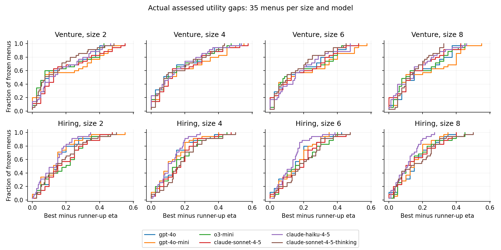
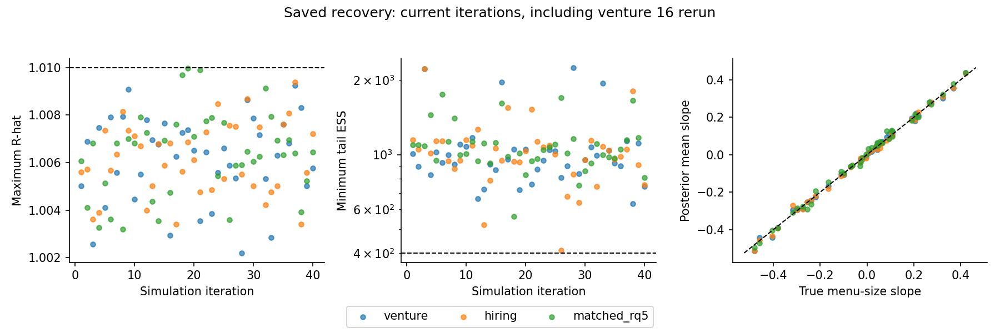
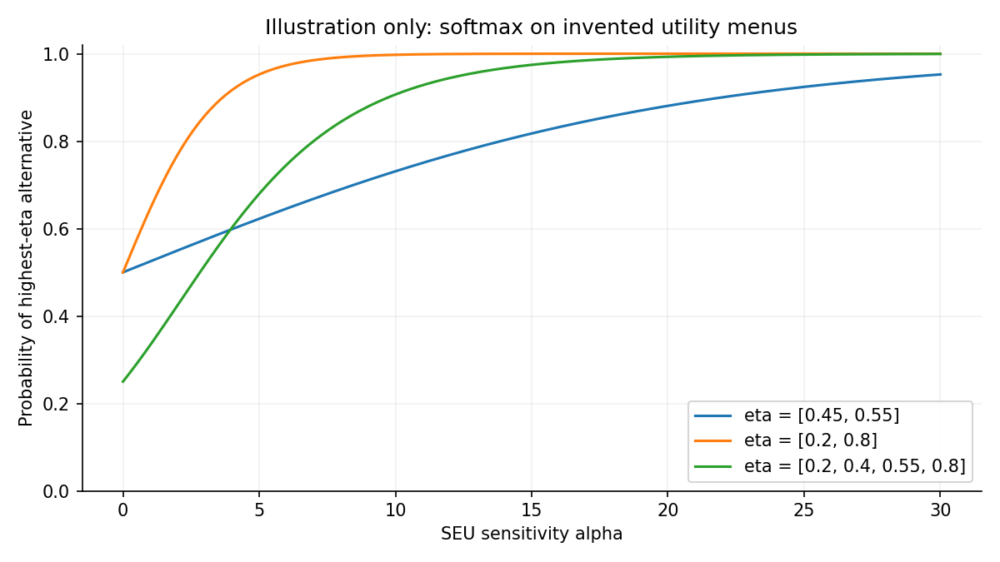

flowchart TD items["Frozen synthetic items and consequence descriptions"] --> assess["Neutral assessment for each model arm and item"] assess --> text["Saved assessment text and probabilities"] text --> choices["Choice requests: three instructions, shared menus, reversed orders"] text --> anchor["Fixed expected utilities at midpoint 0.50"] choices --> parse["Record answer position, item identity, missingness, and usage"] parse --> inference["Anchored hierarchical sensitivity analysis"] anchor --> inference inference --> report["26 declared decisions, descriptive comparisons, and sensitivity fits"]
SEU Sensitivity Study: Motivation, Design, and Pre-Collection Review
Six Model Arms, Three Prompt Conditions, and Two Fixed Decision Domains
applications
study-design
SEU-sensitivity
Scientific rationale, frozen procedures, analysis contract, and preparation evidence for the assessment-anchored SEU sensitivity study.
1 Purpose of This Review
This report describes a study of how closely language-model choices conform to subjective expected utility (SEU) maximization, and how that conformity varies with model arm, prompt condition, decision context, and menu size. It is a pre-collection design report: its empirical material concerns preparation, not the substantive results of production collection. The purpose is to make the proposed experiment sufficiently explicit that a scientifically minded reader can review its assumptions, comparisons, and limitations before collection begins.
The design crosses six model arms with three prompt conditions in each of two fixed pools, venture and hiring. Each pool supplies 140 menus, each presented in two opposite orders. This yields 36 cells and 10,080 planned choice requests. Those requests are not 10,080 independent items, agents, or replications of a decision domain. The repeated use of items and menus is central to both the comparisons and their limitations.
The methodological reference is Helzner’s published working paper, version 1 (Helzner 2026). The current study builds on that paper but changes its measurement implementation: expected utilities are anchored to saved model assessments rather than inferred through a latent belief map from the same choices.
The preparation-evidence cutoff is September 12, 2026. The historical evidence bundle and staged requests are bound to commit 2194432, including preregistration Amendments 1-4. Following independent review of report revision db145fe, the author approved Amendment 5 on October 5: primary comparisons now concern equally weighted realized cell log sensitivities, with additive coefficients retained as descriptive companions. The likelihood, priors, and collection design are unchanged. The historical appendix is not a current analysis contract or validation of every amended estimand. Later amendments control where earlier text differs. Additional review conditions remain open; collection is not yet ready or authorized. No production effect estimates appear in this report.
2 Why Study SEU Sensitivity?
2.1 Decision Quality Without a Correct-Choice Key
A decision can be evaluated against an external answer key: which investment an expert recommends, which applicant an adjudicator would advance, or which action eventually produces the best outcome. This approach is valuable when the key is credible and relevant. It becomes difficult when expert judgments are costly, reasonable judges disagree, or consequences are observed only for the chosen option. An outcome-based key introduces a further problem: a good decision can end badly, while an inadequately supported decision can succeed through luck.
The methodological paper develops a complementary approach. Instead of asking whether a choice agrees with a labeled answer, it asks how the choice relates to probabilities and values under a stated consistency standard. Here that standard is subjective expected utility maximization. An alternative is evaluated by weighting the utility of each possible consequence by its subjective probability, then summing. A choice conforms exactly when it selects an alternative with maximal expected utility. The standard does not require a unique best option; ties can leave several choices admissible (Savage 1954; Neumann and Morgenstern 1947).
Calling this an internal standard does not assert that a language model internally computes expected utilities. “Internal” concerns the relation among the represented commitments and observable choices, not access to cognition. The analyst specifies a behavioral benchmark and measures conformity to it. Neither the paper nor this study establishes SEU as the uniquely correct normative theory. The interpretation is conditional on adopting SEU as the benchmark. Within the softmax model, sensitivity provides a graded measure of adherence to SEU maximization: holding expected utilities fixed, choice increasingly favors maximizing alternatives as sensitivity grows, and concentrates entirely on the maximizing set in the limit.
SEU is an internal consistency standard relating probabilities, utilities, and choice. Even exact conformity to that standard does not by itself establish that the probabilities are well grounded, that the objectives are appropriate, or that realized outcomes will be favorable. This is a boundary of the standard, not a shortcoming peculiar to sensitivity as a measure of adherence. Assessing fairness or suitability for deployment requires additional substantive criteria and evidence. These questions are distinct from the measurement limitations introduced by elicitation, imposed utilities, model fit, and statistical uncertainty. In particular, an agent can reject the analyst’s utility assignment for coherent reasons. The study is not a practical validation of automated hiring or capital allocation. Its controlled synthetic materials are instruments for examining choice behavior, not operational recommendations about real applicants or businesses.
2.2 Commitment, Performance, and a Graded Measure
The conceptual separation between commitment to a standard and performance relative to it is useful here (Levi 1980). Someone can endorse arithmetic while occasionally calculating incorrectly. Our statistical model assumes a corresponding representation of choice: behavior is generated as if by an agent committed to SEU maximization but with limited sensitivity to its implications. This relationship to the standard is a modeling assumption, not a commitment inferred independently from the agent’s verbal declarations. Applying the model asks whether that representation adequately describes the observed choices and, where it does, what its sensitivity estimates reveal. Posterior predictive checks examine aspects of this adequacy; they do not establish that the assumed generative process is the agent’s actual cognitive mechanism. Within this framework, the study asks whether naming the standard changes observed conformity, and whether a generic request to deliberate has the same effect.
A binary classification would discard substantial information. Two agents may both sometimes select an alternative below the assessed maximum, yet differ in how strongly their choices favor larger expected-utility advantages. Counting maximizers alone also confounds responsiveness with the difficulty and size of the menus: choosing the best of two close options is different from choosing the best of eight widely separated ones. A choice model incorporates the expected utilities of all available alternatives, rather than treating every success or failure as interchangeable.
Let \(\mathcal A_m\) be the available alternatives in menu \(m\), and let \(\eta_r\) be the expected utility assigned to alternative \(r\). The softmax specification is
\[ \Pr(Y_m=r\mid\alpha,\boldsymbol\eta) =\frac{\exp(\alpha\eta_r)}{\sum_{t\in\mathcal A_m}\exp(\alpha\eta_t)}. \tag{1}\]
The sensitivity \(\alpha\) controls how strongly probability responds to value differences. As \(\alpha\) approaches zero, choices approach the uniform distribution on the available menu. As it grows, probability concentrates on the maximal alternatives, becoming deterministic only when the maximizer is unique. For two available alternatives,
\[ \log\frac{\Pr(Y_m=r)}{\Pr(Y_m=t)}=\alpha(\eta_r-\eta_t). \tag{2}\]
This log-odds relation explains the measurement scale. With values fixed, increasing \(\alpha\) shifts pairwise odds toward the higher-valued alternative. The total probability of selecting a maximizer increases when menu values are not all equal. It is not necessary, or generally true, that every individual nonmaximizer’s probability decreases at every value of \(\alpha\). The illustrative curves in Figure 3 use invented values solely to explain this mechanism. The softmax form follows a familiar discrete-choice tradition but remains a substantive modeling assumption (Luce 1959; McFadden 1974; Train 2009).
The same mathematical form is often written with an inverse temperature multiplying the values, which is why that term is sometimes used for sensitivity. Language-model providers also expose a setting called temperature, but it controls sampling during text generation. That provider setting is an input to the choice system; our \(\alpha\) is estimated afterward from how its recorded choices relate to expected utilities. A provider temperature of zero, for example, does not imply infinite SEU sensitivity: a consistently generated answer can still select a lower-valued alternative. The two quantities have different roles and are not assumed to be reciprocals.
3 From the Paper to the Measurement Model
3.1 What Is Fixed and What Is Estimated
The paper distinguishes sensitivity, beliefs, and utilities conceptually. Its latent-belief implementation predicts probability vectors from embeddings of assessment text and infers the belief-map parameters from choices. That is not the primary implementation here. This study first elicits a probability vector \(\boldsymbol q_{a,p,r}\) for each model arm \(a\), pool \(p\), and item \(r\). The three entries correspond to the pool’s ordered consequences. These saved probabilities are then treated as data.
The primary utility vector is \((0,0.5,1)\), giving the fixed index
\[ \eta_{a,p,r}(u)=q_{a,p,r,2}\,u+q_{a,p,r,3},\qquad u=0.5. \tag{3}\]
The same \(\eta\) is used in all three prompt conditions for that arm and pool. Choices inform the hierarchy of sensitivities and the menu-size slope. They do not revise the probabilities, estimate the intermediate utility, or fit an embedding-to-belief coefficient matrix. Utility sensitivity analyses recompute every \(\eta\) with \(u=0.35\) and \(u=0.65\) before refitting. They are changes in a maintained measurement assumption, not newly collected preferences.
Fixing the midpoint is a substantive modeling choice, not a general identification requirement once probabilities are supplied as data. With sufficiently varied probability contrasts, normalized utilities and sensitivity can be jointly identifiable. This study instead conditions on a specified utility vector and checks alternative midpoint assignments; it does not establish that estimating utilities would be impossible. Its estimand is therefore sensitivity to expected utilities constructed from the agent’s stated probabilities and imposed utilities, rather than a fully elicited representation of the agent’s own beliefs and preferences.
Although the source of expected utilities differs from the paper’s latent-belief implementation, its three characterizing softmax properties still apply conditional on those values: pairwise odds shift toward higher values as sensitivity increases, choice concentrates uniformly on the maximizing set as sensitivity tends to infinity, and choice becomes uniform over the menu as sensitivity tends to zero. Changing how the values are obtained changes the measurement interpretation, not these mathematical properties.
Text embeddings are numerical representations of text. In the paper’s latent-belief implementation, embeddings of assessments enter the model that maps text to probabilities. In the present study, embeddings of item descriptions are used to screen materials and check menu construction, as explained in Screening and Sample-Size Evidence. They are not inputs to the anchored choice likelihood, which uses the saved probability vectors directly. Passing an embedding-based screen therefore does not establish either the accuracy of those probabilities or the adequacy of the softmax model for subsequent choices.
3.2 Identification Is Conditional, Precision Is Empirical
Proposition 3.1 of the paper identifies \(\alpha\) when \(\boldsymbol\eta\) is fixed and at least one positive-probability menu has nonconstant expected utilities. Equation Equation 2 gives the intuition: a known nonzero value gap turns observable log-odds into a unique sensitivity. If all alternatives in every menu have equal expected utility, changing \(\alpha\) changes no choice probability and the choices supply no information about it.
The word fixed carries this particular identification argument. The problem motivating the September 7 assessment-anchoring amendment (Amendment 1 in the amendment history) was not merely imprecise belief estimates: at the production dimensions, the flexible belief map could rescale expected-utility contrasts while an inverse change in sensitivity preserved the choice likelihood, even with utilities already fixed. Fixing the best and worst utilities removes an affine scaling indeterminacy, but does not remove that belief-map/sensitivity tradeoff. Assessment anchoring removes this particular freedom by conditioning on elicited probability vectors. It changes what is being estimated, not merely the sampler settings.
NoteAn alternative analysis, not the present protocol
Fixing probabilities need not require fixing the utility midpoint. The following example explains that possibility; it is not the model fitted in this study. Consider a simpler model with a common \(\alpha>0\), known probabilities, and utilities \((0,u,1)\). For alternatives appearing together, write \(\Delta q_k=q_{r,k}-q_{t,k}\). Then
\[ \log\frac{P(r)}{P(t)}=(\alpha u)\Delta q_2+\alpha\Delta q_3. \]
The two coefficients multiplying the probability differences are \(\alpha u\) and \(\alpha\). If the comparisons vary in two independent directions, rather than always trading the middle and best outcome probabilities in the same proportion, the choice probabilities can identify both coefficients. Their ratio then identifies \(u\). This is the meaning of requiring the comparison vectors \((\Delta q_2,\Delta q_3)\) to span two dimensions. Proportional contrasts identify only one combination; nearly proportional contrasts can give poor precision. This example does not establish identification or recovery for an expanded version of our hierarchical model with its size effect.
An uncertain midpoint could, for example, receive a beta prior centered at 0.5 while keeping the endpoints normalized. Such a prior would regularize utility inference, not make a likelihood-unidentified parameter identified by the data. Whether utilities were shared across arms, prompts, or domains would also need specification and validation. This would be a different analysis of the choice data, not necessarily a requirement for new utility-elicitation data.
Returning to the present fixed-utility protocol, separate midpoint refits assess dependence on several assignments; they do not estimate utilities or integrate over utility uncertainty. Proposition 3.1’s identification of sensitivity conditional on fixed expected utilities does not guarantee useful precision in 280 observations per cell. Information depends on the actual value gaps, menu composition, sensitivity range, and realized choices. Very large gaps with almost exclusively maximizing choices can provide little upper bound on \(\alpha\). Very small gaps can make distinct sensitivities difficult to distinguish. Proper priors stabilize inference, but a stable finite posterior is not evidence that the likelihood has sharply located the parameter. Recovery, interval width, prior influence, and posterior predictive behavior must therefore be examined separately.
The present protocol’s hierarchy also involves two levels of identification. The choice likelihood concerns realized cell sensitivities and their variation with size. The decomposition of those cell values into additive effects and residual deviations is governed by the hierarchical model and its priors. A well-behaved likelihood for cell sensitivities does not make that decomposition a prior-free fact. This matters particularly for interpretations of model-by-prompt interactions and residual heterogeneity.
3.3 The Substantive Cost of Anchoring
The probability statement is an elicited report. It may be rounded, inconsistent with the prose assessment, sensitive to the elicitation format, or different from the information effectively used during choice. Holding it fixed across prompt siblings removes variation in the saved anchor, but cannot prevent the model from reinterpreting the assessment or implicitly valuing outcomes differently when instructed to choose. The choice-instruction comparison, introduced below as RQ2, therefore concerns a change in conformity to the same stated-assessment benchmark, not proof that the treatment affects action while leaving every internal belief unchanged.
Likewise, setting utilities to \((0,0.5,1)\) does more than choose units. Fixing the endpoints selects the zero and unit; putting the middle consequence halfway between them imposes a particular spacing. The prompts describe consequences and refer to their value, but do not instruct the models to perform the numerical calculation in Equation 3 using an explicitly supplied midpoint of 0.5. Divergence from that calculation can therefore reflect utility disagreement as well as imperfect sensitivity. The two alternative midpoints test a limited but important part of this dependence; they do not identify the model’s actual utility function.
Eliciting utilities alongside probabilities would offer a different benchmark: conformity to the agent’s stated beliefs and stated values. Cardinal utility elicitation would need justification, however; an arbitrary numerical rating is not automatically a utility on an expected-utility scale. Lottery-indifference questions offer one route, with their own elicitation and consistency assumptions. Treating elicited utilities as fixed would still omit their measurement uncertainty. Unlike estimating an uncertain midpoint from existing choices, this alternative requires additional data collection through utility-elicitation questions. It is a possible future design, not part of the present protocol.
For the present design, the essential point is that the utility schedule is imposed rather than elicited. Whether an organization, analyst, or experimentalist supplies it does not change its mathematical role in the benchmark. As noted above, the current choice prompts do not explicitly supply the numerical schedule.
Within an arm, all prompt conditions share the same saved probabilities, so their choices are compared against the same item values. Across arms, the situation differs: each model assesses the common items for itself. Two models can therefore assign different expected-utility gaps, or even different rankings, to the same menu. Comparing their sensitivities asks how closely each model’s choices track the benchmark constructed from its own stated probabilities and the common utility schedule; it does not ask which model more often chooses a single shared best item. Across venture and hiring, the consequences themselves also have different meanings, despite the shared numerical utility schedule. These are conditional comparisons of adherence, not an unrestricted ranking of rationality.
4 Research Questions and Estimands
The table maps scientific questions to the current Amendment 5 estimands. The historical appendix supplies the earlier additive coefficient vectors; the realized-cell definitions below supersede those vectors as primary quantities, while retaining the same named comparisons.
| Question | Scientific comparison | Primary quantity | Status |
|---|---|---|---|
| RQ1 | Differences among model configurations | Seven contrasts of realized log sensitivity, equally averaged over prompts, per pool | Confirmatory |
| RQ2 | Explicit SEU instruction and generic deliberation versus neutral | Two prompt contrasts of realized log sensitivity, equally averaged over models, per pool | Confirmatory |
| RQ3 | Variation in prompt effects across models | Cell residuals and draw-wise differences-in-differences | Descriptive |
| RQ4 | Stability of model comparisons across the two domains | Independent-posterior contrast differences and ordering agreement | Descriptive |
| RQ5 | Hiring versus procurement with matched merit structure | Six within-model realized task contrasts, equally averaged over prompts in a matched fit | Confirmatory |
| RQ6 | Responsiveness as the menu grows | Log-sensitivity slope per added alternative, separately by pool | Confirmatory |
How to read the status column. These labels specify how results will be assessed and reported, not whether a question is scientifically important or whether its answer is already known. Both kinds of analysis are planned before production collection; the specification incorporates the preparation work and dated amendments described in this report.
Realized-cell averages versus additive coefficients. Write \(\ell_{a,p,d}\) for the realized log sensitivity of model \(a\), prompt \(p\), and domain \(d\) at a common menu size. Each posterior draw includes both the additive prediction and that cell’s deviation: \(\ell=\gamma_0+X\gamma+\sigma_{\mathrm{cell}}z\). RQ1 averages \(\ell\) over the three prompts for each model and subtracts the corresponding comparator average. RQ2 averages the prompt-minus-neutral difference over all six models. RQ5 averages hiring-minus-procurement over the three prompts for each model in the matched fit. Every mean is equally weighted and computed within a draw before taking posterior summaries. Exponentiating a contrast gives a ratio of geometric mean sensitivities, not a ratio of arithmetic means or of maximizer-selection rates. The additive gamma contrasts remain descriptive companions with no additional primary decisions. This choice targets the actual fixed design; it does not remove the influence of priors on estimated cell sensitivities.
Confirmatory means that the designated quantities belong to a fixed family of 26 primary decisions, with their contrasts, analysis models, and detection rule specified before production outcomes are examined. For each decision, an effect is classified as detected only if its central 90% posterior interval excludes zero and the absolute posterior median exceeds the declared practical threshold: \(\log(1.25)\) for log-sensitivity contrasts, or \(\log(1.05)\) per alternative for the menu-size slope. Only the median must clear the practical threshold; the interval must establish the sign. For example, a log-sensitivity contrast with median 0.30 and interval \([0.05,0.55]\) passes: the interval is positive and the median exceeds \(\log(1.25)\approx0.223\), although its lower bound does not. These are chosen practical-effect thresholds, not quantities estimated from production choices; their rationale and the formal rule are explained in Decisions, Uncertainty, and Multiplicity. Estimates and uncertainty intervals are reported whether or not the rule is met, and an effect opposite to the expected direction is still reportable. A non-detection does not establish equivalence or absence of an effect. Here “confirmatory” describes this predeclared assessment procedure, not proof of a hypothesis or a guarantee of error control across the family; there is no multiplicity adjustment.
Descriptive means that the analysis characterizes patterns and their posterior uncertainty without adding threshold-based detections to that primary decision family. RQ3 describes how prompt effects differ across model arms; RQ4 describes agreement and disagreement between the two fixed domains. These are model-based summaries, including contrasts, intervals, and posterior probabilities where specified, not merely raw-data descriptions. They can provide evidence about the size, direction, and uncertainty of a pattern, but are not classified as additional confirmatory detections even if an interval excludes zero. Nor does “descriptive” mean unplanned or selected after seeing the results. For example, the average SEU-instruction contrast in RQ2 receives a primary decision, whereas the difference between two models’ instruction effects in RQ3 is reported as a heterogeneity summary. Neither status extends inference beyond the models, materials, and assumptions supporting the particular estimand; in particular, RQ4 cannot establish generalization across a population of domains from two deliberately selected pools.
4.1 RQ1: Model Configuration
RQ1 asks whether the choice systems differ in their responsiveness to the expected-utility benchmark, averaging realized log sensitivities equally over the three prompt conditions. Five nonreference arms are compared with GPT-4o, and two explicitly named within-vendor comparisons contrast flagship with small models. One comparison occurs twice with opposite subtraction orders: the reference-model comparison subtracts GPT-4o’s prompt-average log sensitivity from GPT-4o-mini’s, whereas the OpenAI flagship-minus-small comparison subtracts GPT-4o-mini’s from GPT-4o’s. If the first contrast is \(c\), the second is exactly \(-c\). Thus, a value of \(-0.30\) for mini-minus-GPT-4o becomes \(+0.30\) for GPT-4o-minus-mini, expressing the same model difference. Both named contrasts remain in the declared reporting family, but observing both is not two independent confirmations of that difference. The within-vendor flagship-minus-small hypotheses have an expected positive direction, but both positive and negative detections remain reportable under the frozen rule.
The six arms are a purposeful selection of accessible configurations, not a probability sample of models, training approaches, or parameter counts. A flagship-versus-small difference cannot isolate scale from training, deployment, or other architectural differences. Likewise, the OpenAI reasoning comparison changes endpoints, while the Anthropic reasoning comparison changes thinking and decoding settings on the same Sonnet endpoint. These vendor-specific contrasts should be interpreted separately rather than combined into one causal estimate of “reasoning capability.”
Descriptive Sonnet comparison (Amendment 9, October 7). The accepted B3 post-review addition reports claude-sonnet-4-5-thinking minus claude-sonnet-4-5 separately within venture and hiring. For each joint posterior draw,
\[ {\theta}_d=\frac{1}{3}\sum_{p=1}^{3}\left(\ell_{\mathrm{thinking},p,d}-\ell_{\mathrm{base},p,d}\right). \]
Here \(\ell=\gamma_0+X\gamma+\sigma_{\mathrm{cell}}z\) includes the realized cell deviation, at a common menu size. The fixed one-third prompt weights do not depend on retained observation counts. The report gives the median, central 90% interval, and positive/negative/exact-zero probabilities, plus a draw-wise summary of \(\exp(\theta_d)\): the ratio of geometric-mean sensitivities across prompts, not an arithmetic average of ratios. Missing any required cell makes the comparison unavailable, without reweighting or additive fallback.
This is a contrast of configured arms under their own fixed neutral assessments, not a pure causal reasoning effect. The endpoint is shared, but thinking and decoding settings and the assessed expected-utility benchmarks can differ. The separate sonnet_thinking_descriptive fit-report section covers every supplied valid primary-pool variant, including L/H/S priors, without a new matched-task or difference-in-differences contrast, assessment-scale grid, ROPE, detection decision, or classification. The family remains 26 named decisions (24 distinct up to sign), and the plan remains 24 fits. These are reporting specifications; no production Sonnet comparison has been estimated.
4.2 RQ2: Choice Instructions
RQ2 distinguishes explicitly naming the objective from requesting additional thought. The SEU-maximizing instruction mentions assessed likelihoods and outcome values; the deliberative instruction says to think carefully and reason step by step. Each is contrasted with the domain’s neutral choice instruction. Because assessment text, probabilities, menu membership, and presentation orders are shared across prompt siblings, differences are not attributable to collecting a different assessment set for each instruction.
The hierarchy represents each model-by-prompt cell with a common additive prompt effect plus a cell-specific deviation. For a particular arm, the realized instruction difference includes the additive coefficient and the difference between its two cell deviations. RQ2 now averages these six realized differences with equal weights. Their mean need not equal the additive coefficient because the deviations are not constrained to average to zero. RQ2 assesses this fixed-design average, RQ3 describes variation across arms, and the additive coefficient is reported as a companion. A positive SEU instruction contrast would support greater conformity to the anchored benchmark on average over these six arms, without establishing that every arm changes in the same direction. A deliberative contrast concerns that wording under the answer-first requirement and frozen output budget, not an unconstrained opportunity to deliberate. A non-detection leaves the contrast unresolved under the decision rule rather than demonstrating that the instruction is behaviorally inert.
4.3 RQ3: Model-by-Prompt Heterogeneity
An average instruction effect can conceal different reactions across models. RQ3 therefore reports the residual heterogeneity scale, individual cell deviations, and differences-in-differences of realized log sensitivities. For example, it compares the SEU-minus-neutral change in one model with the corresponding change in GPT-4o. These quantities are computed within each posterior draw so the dependence among cell estimates is retained.
An interaction here means that a prompt difference depends on the model arm. To understand how the existing fit represents this, consider the 18 cells formed by six models and three prompts in one pool. An additive description uses eight independent components: one intercept, five model indicators relative to GPT-4o, and two prompt indicators relative to neutral. This is what it means for its design matrix to have rank eight. The additive description leaves \(18-8=10\) independent patterns of cell variation unexplained. A conventional model-by-prompt interaction table also has \((6-1)(3-1)=10\) components, which describe those departures from additivity.
The present model already allows cell-specific deviations. After removing their additive component, those deviations can represent the same ten interaction patterns. Adding a full interaction table would therefore not supply new observations or new directions of cell-level information; it would change how that information is parameterized and regularized by priors. For this reason RQ3 computes interaction summaries from the existing posterior rather than adding a separate confirmatory interaction fit. The attribution of variation to common effects and cell deviations remains sensitive to the hierarchy’s priors. Also, because the residual scale has a continuous prior on positive values, a positive estimate is not itself a test rejecting exactly zero heterogeneity; the magnitude and uncertainty of the actual prompt differences are more informative.
4.4 RQ4: Two Fixed Domains
RQ4 asks whether model comparisons point in similar directions in venture and hiring. The report will show differences between corresponding realized model contrasts defined as in RQ1, uncertainty intervals, all 15 unordered model-pair comparisons, and probabilities that pairwise orderings have the same sign. These summaries combine independently fitted pool posteriors, not arbitrary matching of their chain iteration numbers.
Two deliberately selected domains do not support a well-identified population distribution of domain effects. In each separately fitted pool, \(\sigma_{\mathrm{cell}}\) describes how much its 18 model-by-prompt cells deviate from that pool’s additive model. For example, a large value in hiring would indicate substantial cell variation within hiring, not a large difference between hiring and venture. Estimating variation between domains would require a model relating domain-level effects across a suitably informative collection of domains; neither of the two within-pool scales serves that purpose. Agreement would establish consistency in these two material sets, not generalization to all decisions under uncertainty; disagreement would identify a context dependence worth describing, not by itself reveal its cause. The descriptive status is an explicit amendment to the original proposal, not an unreported retreat after seeing production outcomes.
4.5 RQ5: Matched Task Context
The matched comparison places parallel merit structures in procurement and hiring contexts. Twenty-four merit keys map vendor profiles to corresponding candidate profiles. Forty menus per task share the same merit-key compositions. The dedicated fit combines the matched observations from all model and prompt cells. For each model, the primary quantity is the average of its three realized hiring-minus-procurement log-sensitivity differences, one for each prompt. It includes the corresponding cell deviations, rather than just the task and model-by-task coefficients. It is not a subtraction of the two full-pool estimates: the startup and ordinary candidate menus would introduce different materials and defeat the matching.
Matching gives this comparison a more controlled interpretation than RQ4. Technical proposals correspond to work samples, delivery records to project histories, and review-board evaluations to structured interviews. Nevertheless, wording, role, consequences, and independently elicited assessments differ. A task contrast could be consistent with different responses to normatively salient context, but does not identify a fairness preference, moral override, or particular decision mechanism. The profiles avoid demographic framing; there is no manipulated protected characteristic whose causal effect could be estimated.
5 Materials, Treatments, and a Worked Trial
5.1 Synthetic Decision Materials
Each pool contains 60 frozen alternatives: 36 primary-family items and 24 matched-family items. The venture pool combines startup investment and procurement profiles; hiring combines primary candidate profiles and the matched candidate set. Primary items comprise ten strong, ten ambiguous, and sixteen weak profiles. Matched items comprise six strong, six ambiguous, and twelve weak profiles. These construction labels govern sampling and screening. They are not correct-choice labels supplied to the likelihood.
The profiles use a structured merit lattice with job- or task-relevant attributes and deliberately mixed evidence. A startup can have an experienced team but little traction; a candidate can have an adequate work sample but weak reference evidence. Consistent templates and explicit reservations make the manipulated information inspectable, while neutral identifiers and coarse experience bands limit incidental framing. The design’s controlled vocabulary is a strength for comparison and a limitation for ecological validity: real dossiers are longer, less standardized, and contain missing or contradictory evidence.
The consequence space has three ordered categories in both pools. Venture assessments use loss, break-even, and high return, including for procurement. Hiring uses underperformance, meeting expectations, and exceeding expectations. Sharing three ordered categories supports the common endpoint utility convention, but does not make the economic or evaluative meaning of those categories identical. In particular, “break-even” is not mathematically guaranteed to be halfway between loss and substantial gain in anyone’s preferences.
5.2 Model Arms and Effective Settings
The arms are GPT-4o, GPT-4o-mini, o3-mini, Claude Sonnet 4.5, Claude Haiku 4.5, and Claude Sonnet 4.5 with extended thinking. The exact staged endpoint strings and request settings appear in Section 11.1. The distinction between arm label and endpoint matters: both Sonnet arms call the dated Sonnet endpoint, but one enables a 4,096-token thinking budget, raises the total cap to 4,160, and uses temperature one rather than zero.
The OpenAI reasoning arm uses medium reasoning effort and a 2,112-token completion cap without a temperature argument. Nonreasoning choices have a nominal 64-token cap and temperature zero. The visible answer must come first, which makes a short cap less likely to censor the selected option. It also constrains the meaning of the deliberative treatment: requesting step-by-step thought does not ensure that a long rationale is generated or that any particular hidden procedure occurs. Provider controls are recorded as part of the treatment, not assumed equivalent across vendors.
5.3 Assess Once, Then Vary the Instruction
For each arm, a neutral assessment request asks for a brief appraisal and a three-entry probability vector for each item. Across six arms and 120 items, the saved materials contain 720 probability vectors. The choice step presents numbered assessments, including their probability lines, rather than a fresh copy of each original dossier. The three choice conditions change the instruction while holding those numbered assessments fixed within a presentation.
For startup choices, neutral says “Choose which venture to fund.” The SEU condition says to choose the venture maximizing subjective expected return given assessed likelihoods and outcome values. The deliberative condition says “Think carefully and reason step by step before choosing.” Domain-specific nouns and objectives change in the other families. The complete frozen templates are in Section 11.7; preserving their exact language allows readers to judge whether the proposed interpretations are warranted.
5.5 The Matched Example
The appendix pairs procurement menu VEN0126 with hiring menu HIR0126 through their merit keys, not their array positions. In the procurement example, vendor P001 has a thorough technical proposal, a sustained successful delivery history, top-band evaluation, detailed positive references, and complete scope coverage. Its candidate counterpart carries the corresponding work-sample, project-history, interview, reference, and role-coverage evidence. The same menu also includes weaker profiles, so matching concerns the entire available comparison set rather than only a favored option.
The probability judgments need not match across tasks, and the anchored model does not force them to. RQ5 asks how choices respond to each task’s assessments under a shared structural design. It would be incorrect to describe the materials as literally identical, to equate matched merit with equal expected utility, or to call them embedding-matched. These distinctions are especially important when interpreting a difference as context-sensitive conformity rather than a response to changed assessed prospects.
7 Statistical Analysis and Safeguards
7.1 Hierarchical Specification
The primary fits are separate for venture and hiring. Let \(c\) index a model-by-prompt cell, \(m\) an observation, and \(s_m\) its menu size centered over the retained observations. The anchored model is
\[ \begin{aligned} \ell_c &= \gamma_0+\boldsymbol X_c\boldsymbol\gamma+\sigma_{\mathrm{cell}}z_c,\\ \log\alpha_m &= \ell_{c[m]}+\gamma_{\mathrm{size}}s_m,\\ Y_m &\sim \operatorname{Categorical}\!\left(\operatorname{softmax}\bigl(\alpha_m\boldsymbol\eta_{c[m],\mathcal A_m}\bigr)\right). \end{aligned} \tag{4}\]
Here \(\boldsymbol X\) contains five model indicators and two prompt indicators, with GPT-4o and neutral as references. There are 18 cell sensitivities, but only seven additive coefficients. The residual term allows each cell to depart from the additive prediction. Exponentiating a log-sensitivity contrast yields a multiplicative ratio of sensitivities. It does not yield the ratio of maximizer-selection rates, which also depend on the full menu’s expected utilities.
| Parameter | Prior | Meaning |
|---|---|---|
| \(\gamma_0\) | \(\mathcal N(2.5,0.5)\) | Reference additive log sensitivity |
| Each component of \(\boldsymbol\gamma\) | \(\mathcal N(0,0.5)\) | Additive model or prompt coefficient; not alone the amended primary contrast |
| \(\gamma_{\mathrm{size}}\) | \(\mathcal N(0,0.2)\) | Log-sensitivity change per alternative |
| \(\sigma_{\mathrm{cell}}\) | Half-normal with scale 0.3 | Residual cell heterogeneity |
| Each \(z_c\) | \(\mathcal N(0,1)\) | Standardized residual deviation |
Normal distributions in this table use standard deviations, not variances. The intercept prior alone has median sensitivity \(\exp(2.5)\approx12.18\); it is not the entire marginal prior for every cell after adding effects and residuals. For the size-eight versus size-two sensitivity ratio \(\exp(6\gamma_{\mathrm{size}})\), the authoritative central 90% prior interval is \([\exp(-6(0.2)\Phi^{-1}(0.95)),\exp(6(0.2)\Phi^{-1}(0.95))]\approx[0.1389,7.1982]\), where \(\Phi\) is the standard-normal distribution function. Amendment 2’s earlier saved simulation approximation, 0.14 to 7.35, is a historical Monte Carlo summary, not a different analytic interval or a different prior. This is substantial permitted variation, not a prior that nearly fixes size invariance.
The size-prior amendment reduced its standard deviation from 0.5 to 0.2 because the former placed excessive probability on extreme size ratios and produced nonfinite-logit proposal rejections in smoke fitting. An even narrower 0.1 was rejected in light of earlier pilot behavior. This was an evidence-informed preproduction calibration, not a claim that priors were selected without examining any pilot outcomes. The distinction matters for judging how much of the design was learned during preparation.
The Phase E4 note also reports a finite-draw approximation, \([0.135,7.03]\), whereas Amendment 2 records \([0.14,7.35]\). Both historical summaries describe the SD-0.2 prior; neither supplies its exact quantiles. They are retained as originally reported, not rerun or relabeled as fresh results. The analytic formula above resolves the interval used to describe the current prior. The separately dated display and tie supplement records its reproducible numerical evaluation.
7.2 Matched Analysis and Descriptive Contrasts
The matched RQ5 fit has 36 cells and an intercept-plus-design rank of 14. Its 13 design columns include additive model and prompt effects, a hiring-task indicator, and five model-by-task terms. The task indicator supplies the reference model’s additive hiring-minus-procurement component; adding each corresponding interaction gives that component for another model. The primary contrast also includes the equally averaged hiring-minus-procurement cell deviations. The additive component is a descriptive companion. The analysis conditions on task-specific assessments for the 48 item representations associated with 24 merit keys.
The 26 named primary decisions comprise seven RQ1 model contrasts and two RQ2 prompt contrasts in each pool, one RQ6 slope in each pool, and six RQ5 task contrasts. Thus the count is \(2(7+2+1)+6=26\). These represent 24 distinct comparisons up to sign, since the OpenAI duplicate appears in both pools. The matched model’s size slope is reported and checked for sensitivity, but it does not add a 27th primary decision. Additive companions, descriptive RQ3 interactions, and RQ4 ordering summaries similarly do not enlarge the confirmatory family.
The RQ4 comparison uses independent draws from the two pool posteriors. For small posterior products the implementation can use all pairings; for large ones it uses deterministic resampling of complete realized-cell draw vectors. Keeping whole vectors preserves within-pool dependence across contrasts, while avoiding a scientifically meaningless dependence introduced by pairing equal chain indices across separately fitted pools. This is a method of propagating the assumed independent posterior uncertainty, not evidence that the materials or model-selection process were independent in a population-sampling sense.
7.3 Descriptive Assessment-Scale Analysis
Sensitivity is expressed per unit of expected utility. A model that assigns a narrower range of expected utilities may require a larger sensitivity to produce the same choice probabilities. This does not show that its stated probabilities are mistaken: the models may genuinely assess the prospects differently. Amendment 6 adds a descriptive comparison in a different unit, alongside the original estimates, without changing the primary estimands or fitting another model.
For arm \(a\) and domain or task \(d\), let \(S_{a,d}\) be the finite-set standard deviation of the fixed expected utilities, and \(\bar\eta_{a,d}\) their mean. Define
\[ \eta^*_{a,d,r}=\frac{\eta_{a,d,r}-\bar\eta_{a,d}}{S_{a,d}}, \qquad \alpha^*_{a,p,d}=\alpha_{a,p,d}S_{a,d}. \]
For positive \(S_{a,d}\), the scale factors cancel in the logits and centering adds the same constant to all menu alternatives. Every softmax choice probability is therefore unchanged. The original \(\alpha\) measures sensitivity per unit of expected utility; \(\alpha^*\) measures sensitivity per one standard deviation of expected utility across the specified reference items. Reporting computes \(\log\alpha^*=\log\alpha+\log S\) within the existing primary posterior draws. It does not refit the model with numerical priors held fixed on a new scale: the original posterior and its prior assumptions are preserved.
The reference sets contain all 60 frozen items per arm in each primary pool. For matched RQ5 they contain the 24 procurement items and the 24 matched hiring items separately for each arm and task, not the full primary pools or the padded off-task columns in the matched Stan data. Each item receives equal weight, and the variance uses divisor \(N\), not \(N-1\), because the target is this finite reference set. References use midpoint 0.5 and are fixed before choices are filtered or cells excluded. Repeated menu appearances never increase an item’s weight.
Using Amendment 5’s cell weights, an RQ1 contrast becomes \(\theta^*_{a,b,d}=\theta_{a,b,d}+\log(S_{a,d}/S_{b,d})\). RQ5 analogously adds the hiring-minus-procurement log-SD difference. RQ4’s independent-posterior comparisons and all 15 model-pair orderings are also reported on the transformed scale. RQ2’s offsets cancel within each arm because its prompts share expected utilities; RQ6’s slope stays unchanged because the offset is constant across menu sizes. These invariances concern positive reference SDs. If an involved SD is zero, the standardized contrast is unavailable rather than stabilized with an arbitrary small denominator; the original result remains reportable. Missing cells follow Amendment 5’s unavailable policy.
Original and standardized medians and central 90% intervals are shown side by side with the deterministic offset. Median sign reversals and changes in whether intervals exclude zero are flagged as scale-dependent descriptive conclusions. The original practical-effect threshold is not applied on the new scale, and no new detection decisions are added. The offset translates the contrast distribution without changing its interval width; it does not supply new information about choices or remove differences in rankings or distribution shape.
The accompanying geometry records means, SDs, item IDs, and the full menu top-two gap distributions and tie prevalence for each arm and pool or matched task. Every frozen menu counts once, including repeated compositions with different IDs: 140 menus per primary pool and 40 per matched task. For this geometry summary only, a gap within absolute tolerance \(10^{-12}\) of zero counts as tied; the existing predictive checks’ exact-tie rule is not altered. Assembly reports bind the complete probability and menu references through their SHA256 hashes. Reporting recomputes geometry, checks canonical item sets, full menu counts and size/family allocation, verifies retained eta values against the bound probabilities, and requires identical reference inputs across sibling variants. Missing or inconsistent reference evidence is an error, not permission to fall back to a reduced observed item set. Structural checks and hashes do not independently prove the source content; final-revision preflight remains required.
7.4 Ceilings and Prior Sensitivity
Amendment 7, approved October 6, distinguishes strong consistency with assessed expected utility from precise measurement of sensitivity. For each retained cell, the analysis reports observation and distinct-menu counts, presentation and size breakdowns, exclusions, exact and numerical near ties, and individual choice regrets and top-two gaps. A near tie uses absolute eta tolerance \(10^{-12}\) and relative tolerance zero without changing the likelihood. Menus tied throughout contribute no sensitivity information; a tie between the best two alternatives need not make the entire menu uninformative.
The analysis also evaluates prior-free cell likelihoods over log sensitivity while holding the shared size slope at its posterior 5th, 50th, and 95th percentiles. These are conditional slices, not profile likelihoods or confidence sets. At a fixed finite slope, all-maximizing choices on at least one unequal menu yield a likelihood supremum only at infinite sensitivity; any strictly nonmaximizing choice produces eventual upper-tail decay. Very small regrets can place that decay far beyond the values plausibly estimated from these data. Neither a high maximizer fraction nor a converged sampler therefore establishes an inferential ceiling or a precise upper bound. The specified grid, posterior-quantile evaluations, analytic limits, and continuous likelihood changes are reported without a numerical ceiling gate.
Three alternative priors supplement the unchanged primary analysis. L widens the common-level prior from \(N(2.5,0.5)\) to \(N(2.5,1.0)\). H widens each coefficient prior from \(N(0,0.5)\) to \(N(0,1.0)\) and the residual-scale half-normal SD from 0.3 to 0.6. S widens the size-slope prior from \(N(0,0.2)\) to \(N(0,0.4)\). Normal parameters here are mean and SD; all other priors, coding, inputs, and exclusions remain fixed. These targeted stress checks are not an exhaustive robustness envelope. Each runs on the three full-data midpoint-0.5 datasets, adding nine fits without crossing prior choices with utility or presentation variants.
Reports compare cell sensitivity quantiles, realized-contrast medians and 90% intervals, sign probabilities, shifts, and interval widths. A changed primary decision under any valid alternative is labeled prior-sensitive under these checks; the original primary result remains visible. An unchanged decision does not excuse a changed magnitude or upper tail. Finite posterior upper quantiles for cells with a likelihood supremum at infinity reflect prior regularization and pooling, not likelihood-only upper bounds. Such cells do not automatically invalidate their contrasts. RQ4 combines independent pools within each prior, and Amendment 6 standardized results remain primary-prior only. Missing or sampler-invalid checks are explicitly incomplete, not evidence of robustness. The primary family remains 26 named decisions, 24 distinct up to sign.
Offline validation used 10,000 prior draws per group/prior on the frozen primary and matched designs, including all four menu sizes and the canonical probability-normalization arithmetic. All summaries were finite; relaxing heterogeneity shrinkage approximately doubled realized-contrast prior interval widths. The reproducible evidence records input hashes and induced distributions, not posterior results. Implementation passed 841 application tests. No alternative-prior posterior fit has run; separate authorization and a runtime benchmark remain necessary. The full approved specification fixes the diagnostic details and interpretation rules.
7.5 Decisions, Uncertainty, and Multiplicity
For a contrast \(\theta\), let \(L\), \(M\), and \(U\) be the 5th percentile, median, and 95th percentile of its posterior. Detection requires
\[ \bigl(L>0\ \text{or}\ U<0\bigr)\quad\text{and}\quad |M|>\rho. \tag{5}\]
For log-sensitivity contrasts, \(\rho=\log(1.25)\). For the size slope, \(\rho=\log(1.05)\) per alternative. The latter corresponds to about a 1.34 ratio across sizes two and eight. The direction of a detected effect follows the posterior median. All estimates, intervals, and classifications are reported, including opposite-to-expected directions and non-detections.
These thresholds were adopted as substantive planning choices before production, not derived from a theorem, fitted to production results, or estimated from recovery precision. The main threshold requires the larger sensitivity to be more than 1.25 times the smaller at the posterior median. The separate menu-size threshold was explicitly approved during the September 6 design review: a factor of 1.05 per added alternative accumulates to \(1.05^6\approx1.34\) across the tested range, making a modest per-step change appreciable over the whole range. This interpretation motivated the choice; it is not an empirical demonstration that these boundaries separate important from unimportant behavior. The utility gaps and menus still determine what either sensitivity ratio means for choice probabilities.
This rule combines sign resolution with a practical-magnitude threshold. It does not require the whole interval to lie outside the region of practical equivalence (ROPE). A contrast can pass when its lower bound is positive but smaller than the threshold, provided its median clears the threshold. Conversely, a large median with an interval spanning zero does not pass. “Not detected” therefore pools several kinds of uncertainty and must not be translated into “equivalent” or “no effect.”
The family has no multiplicity adjustment. Hierarchical shrinkage and the ROPE are the predeclared mitigations, but neither establishes frequentist familywise error control. Reporting all family members, including the sign-reversed OpenAI duplicate, is essential to preventing selective presentation. The thresholds define the study’s chosen practical resolution; they are not universal constants of decision theory. A reader can reasonably question whether a 25% sensitivity ratio or a 5% per-alternative change is substantively important in these materials.
7.6 Parsing, Exclusion, and Fit Validity
Each choice is requested as ANSWER: n, with an integer in the available range. Collection retains the response and resolution path so that direct token parsing, fallback parsing, and unresolved records can be distinguished. An unresolved response is not silently replaced by a default alternative. Position is mapped to item identity, then to the active-set index expected by Stan; this mapping is necessary for the reversed presentations to describe the same alternatives consistently.
Missingness is evaluated within cell. A rate above 10% is flagged and above 30% excludes the whole cell, with an explicit caveat. Unresolved observations are omitted from the choice likelihood, not treated as evidence for any available alternative. The preparation reports retain cell identifiers, design columns, rank, and presentation membership. After exclusions, the intercept-plus-design matrix must still have full rank. A rank failure stops the analysis rather than quietly changing the hypotheses to fit whatever cells remain.
Under Amendment 5, retained design rank is necessary but not sufficient for every realized contrast to be available. If any cell required by a contrast’s fixed weights has been excluded, that contrast is explicitly unavailable. The implementation neither averages over a smaller set nor substitutes an additive prediction for the missing cell. Missing IDs and available/unavailable decision counts are reported while preserving the 26 named reporting slots. Unavailable does not mean not detected.
These rules make processing reproducible but do not make missingness ignorable. Refusal, truncation, parsing failure, and provider failure can have different substantive meanings. Their distribution by model, prompt, difficulty, size, and resolution path should accompany the estimates. More granular explanatory attributions are post hoc unless already specified. If difficult or large menus fail selectively, conditioning on resolved choices can change the target comparison even below the whole-cell exclusion threshold.
Final fits use four chains and maximum treedepth 12. Structural parameters must have finite diagnostics, \(\widehat R<1.01\), bulk and tail effective sample sizes of at least 400, and chain energy diagnostics meeting E-BFMI of at least 0.3. Divergences and treedepth saturation must be zero. These criteria concern reliable numerical exploration of the posterior. They do not certify that the choice model is true, that the prior is appropriate, or that the data are informative. The frozen operational policy also provides a 12-hour wall-clock stop rule for each fit launch.
The reporting manifest binds supplied fits to four chain hashes, Stan data, preparation reports, and analysis contracts. Amendment 7 expands the plan to 24 fits, using input manifest schema 2, output report schema 3, and version-2 observation evidence. It requires complete retained/excluded observation reconciliation and frozen presentation-order checks; prior variants additionally bind their prior contracts and model source and verify saved setting echoes. Older preparation reports must be rebuilt for this path. Historical schema-1 manifests remain readable with A3 assessment explicitly absent, not complete. The loader checks actual chain and sampler metadata and generated-quantity consistency. These checks support traceability but declared bindings are not cryptographic proof of execution. Predictive and weak-information diagnostics remain necessary interpretation, not blanket numerical approval.
7.7 Posterior Predictive Checks
Independent-review follow-up: Amendment 8, approved October 6, implements the expanded size/stratum, filler-selection, item-share, displayed-position and paired-presentation checks specified below. They use saved replicas without new fits. Ceiling and prior-sensitivity procedures are implemented under Amendment 7 (Section 7.4). Both amendments have passed offline checks, but neither supplies a production posterior assessment.
Yes: the analysis includes posterior predictive checks intended to reveal ways in which the fitted choice model fails to describe behavior. For each retained posterior draw, the Stan model generates a replicated choice for every observed menu using that draw’s cell sensitivity, menu-size effect, and fixed expected utilities. The menus, available alternatives, and retained observations stay the same. Repeating this over posterior draws gives the distribution of choice patterns expected under the fitted model, accounting for uncertainty in its parameters. Observed and replicated summaries can then be compared. This is a check of fit to the collected data, not a held-out prediction exercise and not another parameter-recovery simulation.
For every supplied sampler-valid variant, reporting computes the following summaries by cell and pool/task, overall, by size, and by family x authored stratum x size. Pool/task aggregates weight retained observations equally, with counts shown; they are not the equally weighted cell estimands. Matched procurement and hiring remain separate:
| Summary | Comparison and interpretation |
|---|---|
| Maximizer-selection fraction | The observed fraction selecting any exact expected-utility maximizer is compared with the replicated distribution. Tied maximizers all count. A discrepancy indicates that the model does not reproduce the frequency of maximizing choices. |
| Mean probability of selected alternatives | At each posterior draw, the model’s probabilities for the alternatives actually selected are averaged and compared with the corresponding average for replicated choices. This examines whether observed selections are systematically less or more probable than typical simulated selections. |
| Mean log probability of selected alternatives | The analogous comparison uses log probabilities, making selections assigned very small probabilities especially influential. It can expose disagreement obscured by the raw average probabilities. |
| Mean regret | Compare maximum menu eta minus selected eta, including choices among tied maxima. |
| Authored-filler selection | Compare selection of weak-labeled fillers under the validated frozen recipe, even when a filler is an assessed maximizer. Size-2 menus have a labeled structural zero. |
Item tables show exposure and selection counts, exposure-conditional selection rates, and unconditional choice shares by cell and pool/task. Zero exposure makes the conditional rate unavailable. Actual display-position tables map sorted-active choice indices through item identity to the frozen presentation order and separate sizes and presentations. A legacy sorted-index summary is retained only as an encoding diagnostic. For complete cell/menu pairs, same-item repetition and same-position repetition are compared separately using the two replicas from the same posterior draw; conditional probability-product expectations provide a numerical cross-check. Counts include complete pairs, single retained presentations, and neither-retained pairs. Presentation-only fits have paired checks unavailable by design.
For maximizer, regret, and filler summaries, a fixed four-size behavioral trend uses equal size weights \((n-5)/20\) for \(n\in\{2,4,6,8\}\). An absent size makes the trend unavailable rather than changing its definition. This trend is not an estimator of the sensitivity slope: replicated choice patterns already incorporate menu geometry and the fitted size effect. Every retained grouping uses the same observed and replicated masks and stable summation; exact ties remain distinct from near ties.
The output includes the 5th, 50th, and 95th percentiles of replicated summaries and of draw-dependent observed scores. It also records the fraction of menus with tied maximal values and the distributions of cell and observation-level sensitivities. The latter help interpret, for example, many maximizing choices accompanied by a poorly bounded upper tail for sensitivity; they are not themselves observed-versus-replicated fit tests.
These checks are descriptive, not additional members of the 26-decision family. A fixed observed statistic strictly outside its central 90% predictive interval receives a review flag; for draw-dependent scores, the central 90% within-draw observed-minus-replicated discrepancy must exclude zero. Less/equal/greater empirical tail fractions are shown separately. The complete prespecified tables are retained, including unflagged and small groups. These many dependent flags are not calibrated tests, independent failures, or a multiplicity-controlled predictive gate.
RQ6 carries structured qualifications alongside its unchanged estimate and decision: unreproduced size trends, other choice-pattern discrepancies, excess same-item repetition, display-position discrepancies, missing sizes/pairs, and conditioning on retained observations. Excess repetition qualifies independence but does not establish a cause; an interval including zero in a half-sized presentation fit alone is not proof of failure. Eligible, unresolved, resolved, retained, and whole-cell-removed counts reconcile by size, stratum and presentation without double counting. Size-specific unresolved-rate ranges disclose differential missingness, which the choice likelihood does not model. Predictive agreement cannot validate elicited probabilities, establish robustness to missingness, or certify precise sensitivity. No primary decision is automatically canceled and no replacement model is selected.
Amendment 8 requires additional hash-bound canonical item-role and recipe evidence in preparation reports. Current manifests need rebuilt preparation and refreshed hashes, not refits merely to add metadata. Historical reports missing that evidence remain readable with A4 unavailable. Offline tests and a representative 5,040-observation, 500-replica benchmark pass; these are computational checks, not observed model adequacy. Full machine-readable diagnostics are about 5.2 MB for that fixture, so main-text interpretation should summarize patterns while keeping complete tables available. The approved specification defines all denominators and flags. No production posterior predictive results are available.
7.8 Required Sensitivity Analyses
| Variant | Presentations | Utility midpoint | Purpose |
|---|---|---|---|
| Primary | Both | 0.50 | Frozen headline analysis |
| Presentation 1 only | First | 0.50 | Remove within-menu duplication without selecting on agreement |
| Presentation 2 only | Reversed | 0.50 | Complementary order-specific check |
| Utility 0.35 | Both | 0.35 | Lower intermediate consequence value |
| Utility 0.65 | Both | 0.65 | Higher intermediate consequence value |
Each row is fitted for venture, hiring, and matched RQ5, yielding the original 15 mandatory fits. Amendment 7 adds L/H/S on the three full-data datasets, for 24 planned fits overall. The utility, presentation, and prior variants are not crossed. Every primary contrast and size slope is compared for changes in sign, interval decision, and substantive interpretation. A result that changes materially is labeled sensitive rather than selecting the preferred fit as the definitive answer. Fewer observations in a presentation-only fit can widen intervals even without a large median shift; that uncertainty is part of the comparison.
The position-stable subset is a different, outcome-selected robustness analysis. A menu qualifies only if its tested presentations agree in chosen item across the supplied cells, with flipped or untested menus excluded. The algorithm then balances sizes by downsampling every size to the smallest eligible count under seed 42. If one size has no retained menus, the balanced set is empty; dropping that size and fitting anyway would change the intended check. Retention by size must be reported alongside any resulting re-estimation.
This subset can reveal whether the size relationship persists among consistently chosen menus, but it is not a correction for dependence. Agreement is itself an observed outcome, potentially related to sensitivity and difficulty. The subset is specified separately from the amended 24-fit plan. Its availability and retained geometry must be checked on production choices; no precollection statement can guarantee sufficient stable menus. The response-independent presentation checks are therefore the principal safeguard against treating duplicated menus as independent information.
8 What Preparation Has Established
8.1 Recovery on the Production Geometry
The Bayesian workflow distinguishes predictions under the prior, recovery from simulated truths, and fit to observed behavior (Gelman et al. 2020; Carpenter et al. 2017). Prior predictive analysis asks what choices the model permits before production data. Recovery asks whether the estimation procedure can recover known parameters when data are generated under its own assumptions. Posterior predictive analysis asks whether the fitted model reproduces relevant features of actual choices. These are complementary checks, not interchangeable labels for validation.
Three production-geometry recovery campaigns contain forty datasets each: venture, hiring, and matched RQ5. The current saved diagnostics pass all gates in 120 of 120 fits. The earlier claim of complete passage was corrected when venture iteration 16 was found to have tail ESS below 400. Its separately authorized longer rerun now passes, and the report’s evidence extraction uses the current saved summaries. The earlier failure and rerun are part of the audit trail, not erased by the final count.
The current worst R-hat values are about 1.00925, 1.00939, and 1.00996 for venture, hiring, and matched recovery. Minimum tail ESS values are approximately 631.7, 409.3, and 562.3. All meet the declared thresholds, although hiring’s minimum is close to 400. The recovery figure displays the replicate-level diagnostics rather than allowing the aggregate pass rate to hide how close some fits are to a boundary. Actual chain headers show mixed schedules: venture and hiring each retain 35 original 500-warmup/500-sampling fits and five longer 1,000/1,000 replacements; matched recovery retains 30 originals and ten replacements. The final pass count therefore describes the completed campaign including remediation, not the first-attempt success rate of one common schedule.
The historical evidence bundle recomputes interval coverage, bias, RMSE, and mean interval width from its saved truths and posterior summaries. For the unchanged menu-size slope, central-90% interval coverage is 36/40 for venture, 37/40 for hiring, and 34/40 for matched RQ5. The full parameter table is in Section 11.4. These finite simulation proportions should not be read as exact calibration probabilities: at forty replicates, one additional missed interval changes coverage by 2.5 percentage points. Their value is in exposing estimator behavior at the actual design, including uncertainty and potential weaknesses. That historical table does not itself establish amended realized-cell coverage. The separate October 7 saved-draw audit below verifies the review’s calculations and adds realized RQ5 results, without overwriting the historical bundle.
Recovering parameters when the simulator uses the fitted model does not validate the behavioral assumptions for language models. In particular, independently generated synthetic choices need not reproduce response dependence or assessment inconsistency in production. Nor does aggregate coverage guarantee equal performance at every sensitivity value. Recovery precision should be read together with the underlying truth range and the possibility of weak upper-tail information when almost every observed choice is maximizing.
8.2 Calibration Limits and Historical Evidence
October 7 saved-draw verification. A separate audit now reconstructs Amendment 5 realized contrasts from the current saved chains and generating truths, including all replacements. All 120 iterations verify and pass the saved-summary sampler gates. Realized RQ5 central-90% coverage is 218/240 contrast-dataset cases, with mean interval width 0.5418, posterior-mean bias -0.01159 and RMSE 0.16597. Outside-ROPE detection is 157/173; the 1.25-1.5 ratio bin has 27/40 detections. The review’s additive RQ5 rate of 18/49 in that bin also reproduces, but the estimands have different truths and bin memberships, so this is not a paired power gain at the same effects. No exact-null truths are available for estimating a null false-positive rate.
Distinct realized RQ1 coverage is 222/240 in venture and 219/240 in hiring; RQ2 coverage is 71/80 and 75/80. These denominators are not independent trial counts. Venture/hiring share full truths in all 40 paired iterations, while the matched campaign shares leading hierarchy parameters and a shifted residual RNG stream. The evidence comprises 40 coupled seed clusters across three geometries, not 120 independent truth vectors; within-dataset contrasts are dependent too. All original temporary choice inputs are missing, so exact choice replay and original-versus-replacement input equality remain unverified. The audit does not claim cross-geometry independent choices. The new verification artifact and methods note record 914 input hashes, selection rules, all results and limitations without replacing the September snapshot. Final review must explicitly address the missing-input provenance rather than silently treating it as verified.
No new formal simulation-based calibration campaign was run for the assessment-anchored model. Amendment 4 explicitly chose production-geometry recovery instead. Earlier SBC work on different model variants remains relevant history, but is not reported as calibration of this likelihood, utility treatment, and prior combination. The paper’s distinction between calibration and informativeness applies directly: even a correctly calibrated posterior can remain too broad to answer a substantive question (Talts et al. 2018; Helzner 2026, sec. 4.4 and 8.3).
The report does not present a newly reconstructed prior-predictive coverage plot as if it were a saved final-design campaign. Its illustrative softmax plot explains the link, while the numerical prior table and size-ratio calculation make important prior implications explicit. The amendment history records the prior-predictive motivation for narrowing the size prior. Claims about older simulation regimes remain attached to their original scope. Amendment 7 adds the explicitly dated offline prior-draw check in Section 7.4; no additional posterior fit or recovery campaign was run for it.
8.3 Collection Readiness Is Not a Scientific Result
Offline preflight passed for the staged wave production-20260911-wave01, binding exact requests, prerequisites, source, and configuration to commit 2194432. The wave contains 36 request sets of 280 choices. Its calculated reservation is approximately $122.772917 against an approved ceiling of $122.78. That is a conditional conservative liability calculation under pinned pricing and request-cap assumptions, not an expected-spend forecast, actual expenditure, or an unconditional guarantee about provider billing.
Earlier live probes established that the reasoning configurations could complete the required answer workflow. Their very small number of trials demonstrates plumbing, not comparative effectiveness, production-level reliability, or absence of every possible remote-duplication failure. Collection safeguards preserve durable state and usage evidence and require reconciliation when remote status is ambiguous. Scientific inclusion depends on the recorded choices and declared rules, not on interpreting a provider’s completed status as evidence that every row is usable.
The staged snapshot is distinct from authorization to submit it. This report introduces another human scientific review before collection; it does not itself authorize spending or launch. Editing the repository prevents the clean-revision guard from passing, and committing the report changes the revision bound by the old manifest. After review and any approved commit, a new preflight snapshot will be required for launch. The existing read-only snapshot remains a provenance record and should not be overwritten or made acceptable by weakening that guard.
9 Limitations and Final Review
The primary estimand is deliberately narrower than a claim about decision quality in the world. It concerns responsiveness to fixed, elicited probabilities and imposed utility spacings under a softmax choice model. That narrowing makes the measurement operational, but creates a construct-validity burden: prose and probabilities can disagree; the choice stage can reinterpret them; and different agents can attach different values to the three named consequences. Utility-grid robustness addresses only part of this burden, while anchoring does not propagate uncertainty in the assessment vectors.
The model also has functional-form commitments. At a fixed size and sensitivity, pairwise odds depend only on the two alternatives’ expected utilities, reflecting the softmax independence-of-irrelevant-alternatives structure. The size covariate allows a specified dependence on set size, but not arbitrary composition effects, attraction effects, or changes in the value functional. If those features drive choices, sensitivity can absorb misspecification. A low estimate is therefore not a diagnosis of irrationality, and a high one is not a certificate that the represented probabilities or objectives are appropriate.
Internal validity is strongest for comparisons sharing the same saved assessments and menus, but even there the output budget and decoding configuration constrain interpretation. External validity is limited by synthetic profiles, controlled lexical structure, two screened domains, six selected model configurations, and provider behavior at collection time. The dated Anthropic endpoints improve specificity; undated endpoint aliases and service changes still require careful recording. Repeating this study at another time is a replication of a configured system, not necessarily a measurement of an unchanged agent.
The results report must retain wide intervals, non-detections, diagnostic failures, and sensitivity disagreements instead of treating them as obstacles to a preferred ranking.
9.1 Questions Before Collection
- Construct: Is responsiveness to a fixed stated-assessment benchmark the intended scientific object, and are the limits of calling it SEU sensitivity acceptable?
- Utilities: Are the equal-spaced primary utilities and the 0.35/0.65 grid adequate for the substantive consequences, particularly break-even and meeting expectations?
- Treatments: Do the actual prompts and decoding settings support the proposed interpretations of explicit optimization, generic deliberation, and reasoning configurations?
- Materials: Is the controlled merit lattice useful for the questions, despite its distance from natural dossiers and the deliberate exclusion of a failed domain?
- Comparisons: Does the matched hiring-procurement design control enough to make its task contrast scientifically informative without attributing a particular moral mechanism?
- Information: Are the available recovery precision and interval behavior sufficient for the study’s aims, given that exact-design power for every threshold effect is not established here?
- Dependence: Are the presentation-only analyses and explicit item-reuse limitations sufficient, or does the scientific purpose require a different dependence model before collection?
- Decisions: Are the central-90%-interval-plus-median rule, declared effect thresholds, and full unadjusted family acceptable, with non-detection never interpreted as equivalence?
- Failure handling: Is it clear that missingness, rank loss, empty stable-size strata, failed sampler gates, and conflicting sensitivities must be reported rather than resolved by discretionary selection?
These questions are an invitation to review the planned inference, not a new set of numerical gates. Any resulting change to the scientific protocol should be documented before production outcomes can influence it. If the current specification is accepted, the next operational step is separately authorized preparation against the final reviewed revision, followed by collection under the existing safeguards. The later results report should answer the six RQs in their declared scope, including cases where the experiment leaves the answer uncertain.
Author self-review, October 5, 2026; status updated October 7. The study author answered yes to all nine questions above. This was self-review of the earlier specification, not independent acceptance or authorization to submit production requests. The subsequent independent review of revision db145fe prompted Amendments 5 and 6 and the October 6 approvals of Amendments 7 and 8. Ceiling/prior and expanded predictive procedures now pass offline implementation checks; production posterior assessments have not run. Saved-draw recovery calculations are now verified, but acceptance or remediation of missing historical choice-input provenance and other review conditions remain open. Final-revision preflight and explicit collection authorization remain separate steps.
10 Technical Appendices
10.1 Protocol Evolution
| Amendment | Date | Current consequence |
|---|---|---|
| 1 | September 7 | Assessment-derived fixed expected utilities replace the latent belief map; RQ4 becomes descriptive across two fixed pools |
| 2 | September 7 | Size-slope prior SD changes from 0.5 to 0.2 with documented calibration rationale |
| 3 | September 9 | Exact contrast family, central intervals, median-based ROPE decision, matched task design, and fit bindings are frozen |
| 4 | September 10, updated September 11 | Response-independent presentation sensitivities and no-new-SBC policy; recovery audit and authorized rerun are recorded |
| 5 | October 5 | Realized-cell RQ1/RQ2/RQ5 contrasts become primary; additive companions and aligned RQ4 remain descriptive; remaining review conditions stay open |
| 6 | October 5 | Fixed-reference assessment-scale transformations of primary posterior draws are descriptive; no refits or additional primary decisions |
| 7 | October 6 | Ceiling diagnostics and L/H/S prior sensitivity specified and implemented; nine additional planned fits, unchanged primary decisions, posterior checks unrun |
| 8 | October 6 | Expanded descriptive predictive checks and RQ6 qualifications implemented using saved replicas; no added fits or primary decisions, no production adequacy claim |
| 9 | October 7 | B3 descriptive Sonnet-thinking minus Sonnet comparison within each primary pool; fixed prompt weights and own-assessment interpretation, no new matched contrast, fits or primary decisions |
The original protocol’s pinned-model and between-pool-variance wording is historical. Amendment 5 also supersedes the staged additive-primary reporting contract. The evidence bundle records source-relative hashes for the September snapshot; it has not been regenerated from the amended source or a new preflight. A source-hash check against the current modified protocol and code is therefore expected to detect differences. The old snapshot must not be made to appear current by weakening those checks.
10.2 Reading the Evidence
The following appendix is generated by the explicit offline evidence exporter. Its default mode checks the portable bundle; refresh requires access to the saved local source artifacts and is never part of rendering. The linked YAML stores figure inputs, item texts, probabilities, menu records, settings, contrast coefficients, recovery summaries, and source hashes. It does not contain raw model thinking, credentials, or provider batch identifiers. The full raw request and chain archives remain separate; a source hash supports integrity checking but does not make an otherwise unavailable artifact publicly retrievable.
The standard HTML build uses this report, the generated appendices, the portable bundle, three static figures, a table-only probability-formatting filter, and the site’s ordinary resources. It makes no provider calls, runs no sampler, and does not depend on a hidden cache of production outcomes. The October supplement below is separate from the unchanged September evidence. Long exact prompt examples are retained to make the intervention auditable; their role is documentary rather than a recommendation to use these prompts in consequential settings.
10.3 October Display and Tie Reconciliation
This October 7 supplement uses the frozen September probability/menu bundle, not production choices. The table counts menus whose two largest expected utilities coincide exactly, followed by additional menus whose positive gap is at most \(10^{-12}\) (relative tolerance zero). The last column includes both categories. Counts are descriptive geometry, not observed maximizing rates. A top-two tie need not make every alternative equally valued.
Primary-pool rows count all 140 menu IDs, including the 40 matched-family menus. Matched rows show those 40-menu subsets separately, so they are not independent additional menus. Each ID counts once, not once per presentation; repeated compositions with distinct IDs are retained. All arms use their own neutral assessments and utilities \((0,0.5,1)\). Expected utilities use the current canonical probability-normalization helper; no display rounding enters the calculation. The historical figure retains its original arithmetic and is not overwritten.
| Pool / subset | Arm | Exact ties | Additional near ties | All ties within tolerance |
|---|---|---|---|---|
| venture / all | gpt-4o | 21/140 | 0/140 | 21/140 (15.0%) |
| venture / all | gpt-4o-mini | 22/140 | 0/140 | 22/140 (15.7%) |
| venture / all | o3-mini | 13/140 | 0/140 | 13/140 (9.3%) |
| venture / all | claude-sonnet-4-5 | 23/140 | 0/140 | 23/140 (16.4%) |
| venture / all | claude-haiku-4-5 | 19/140 | 2/140 | 21/140 (15.0%) |
| venture / all | claude-sonnet-4-5-thinking | 6/140 | 0/140 | 6/140 (4.3%) |
| venture / procurement | gpt-4o | 8/40 | 0/40 | 8/40 (20.0%) |
| venture / procurement | gpt-4o-mini | 2/40 | 0/40 | 2/40 (5.0%) |
| venture / procurement | o3-mini | 4/40 | 0/40 | 4/40 (10.0%) |
| venture / procurement | claude-sonnet-4-5 | 7/40 | 0/40 | 7/40 (17.5%) |
| venture / procurement | claude-haiku-4-5 | 6/40 | 0/40 | 6/40 (15.0%) |
| venture / procurement | claude-sonnet-4-5-thinking | 1/40 | 0/40 | 1/40 (2.5%) |
| hiring / all | gpt-4o | 15/140 | 0/140 | 15/140 (10.7%) |
| hiring / all | gpt-4o-mini | 10/140 | 0/140 | 10/140 (7.1%) |
| hiring / all | o3-mini | 4/140 | 0/140 | 4/140 (2.9%) |
| hiring / all | claude-sonnet-4-5 | 9/140 | 0/140 | 9/140 (6.4%) |
| hiring / all | claude-haiku-4-5 | 3/140 | 0/140 | 3/140 (2.1%) |
| hiring / all | claude-sonnet-4-5-thinking | 3/140 | 0/140 | 3/140 (2.1%) |
| hiring / matched | gpt-4o | 3/40 | 0/40 | 3/40 (7.5%) |
| hiring / matched | gpt-4o-mini | 2/40 | 0/40 | 2/40 (5.0%) |
| hiring / matched | o3-mini | 1/40 | 0/40 | 1/40 (2.5%) |
| hiring / matched | claude-sonnet-4-5 | 5/40 | 0/40 | 5/40 (12.5%) |
| hiring / matched | claude-haiku-4-5 | 0/40 | 0/40 | 0/40 (0.0%) |
| hiring / matched | claude-sonnet-4-5-thinking | 0/40 | 0/40 | 0/40 (0.0%) |
Neutral-probability cells in the report’s example tables display six decimal places. Verbatim request blocks and the downloadable historical YAML retain their original values, including floating-point representation artifacts. Equal displayed values therefore do not establish exact equality in the calculation. This formatting does not change assessment probabilities, likelihood inputs, or the predictive checks’ exact-maximizer rule.
The machine-readable supplement retains menu IDs, unrounded top-two gaps, the analytic size-prior interval and source hashes. Reproduce it with python -m analysis.study_display_evidence --check. The September exporter and its outputs are unchanged; this is a separately dated supplement.
11 Frozen Evidence Bundle
Snapshot: 2026-09-12. Source commit: 2194432. Staged wave: production-20260911-wave01. The portable YAML bundle contains frozen item texts, neutral probability matrices, menu membership, exact examples, settings, contrast vectors, recovery summaries, and relative source SHA-256 hashes. No local raw inputs or Python execution are required to render this appendix.
11.1 Staged Design and Settings
Cells and calls are observed in staged request files, not observed choices. Fifteen fits are planned, not fitted results.
| Quantity | Count | Evidence status |
|---|---|---|
| cells | 36 | verified staged design |
| staged choice calls | 10080 | verified staged design |
| menus per pool | 140 | verified staged design |
| menus per size per pool | 35 | verified staged design |
| matched keys | 24 | verified staged design |
| paired menus | 40 | verified staged design |
| matched subset calls | 2880 | verified staged design |
| planned fits | 15 | planned |
There are 60 frozen items per pool and 720 parsed model-by-item neutral probability vectors across the two pools. Each of the 36 cells contains 280 staged requests; the matched subset contains 80 per cell. The manifest records a wave reservation bound of $122.772917, not realized cost or evidence of submission.
| Arm | Endpoint | Actual staged choice settings |
|---|---|---|
| gpt-4o | gpt-4o | {"max_tokens": 64, "model": "gpt-4o", "temperature": 0.0} |
| gpt-4o-mini | gpt-4o-mini | {"max_tokens": 64, "model": "gpt-4o-mini", "temperature": 0.0} |
| o3-mini | o3-mini | {"max_completion_tokens": 2112, "model": "o3-mini", "reasoning_effort": "medium"} |
| claude-sonnet-4-5 | claude-sonnet-4-5-20250929 | {"max_tokens": 64, "model": "claude-sonnet-4-5-20250929", "temperature": 0.0} |
| claude-haiku-4-5 | claude-haiku-4-5-20251001 | {"max_tokens": 64, "model": "claude-haiku-4-5-20251001", "temperature": 0.0} |
| claude-sonnet-4-5-thinking | claude-sonnet-4-5-20250929 | {"max_tokens": 4160, "model": "claude-sonnet-4-5-20250929", "temperature": 1.0, "thinking": {"budget_tokens": 4096, "type": "enabled"}} |
The nominal visible choice cap is 64 tokens and assessment cap is 400; actual provider completion caps above include reasoning/thinking headroom. Assessments are neutral and reused across the three choice instructions. Reversed presentations are not independent item replicates.
11.2 Frozen Stimuli and Rendered Requests
Examples below are deterministic selections from the frozen GPT-4o neutral request files. Choice prompts are the actual staged strings, not rewritten examples. Assessment prompts are reconstructed from hash-verified frozen templates and item text. The procurement/hiring examples are paired by matched merit keys, not by array position.
11.2.1 Venture: startup
Menu VEN0018, presentation 1; item order: V012, V015.
Consequence order: Loss: the committed capital is not recovered; Break-even: the commitment is recovered with no material gain; High return: the commitment returns a substantial gain.
| Item ID | Neutral probabilities | Assessed eta |
|---|---|---|
| V012 | [0.400000, 0.300000, 0.300000] | 0.4500 |
| V015 | [0.400000, 0.350000, 0.250000] | 0.4250 |
Frozen stimulus V012
Venture V012 -- health data infrastructure; pre-seed stage.
Team record: founding team has a sustained record of shipping comparable products successfully.
Traction: no usage or revenue reported to date.
Demand evidence: several paid pilots.
Product maturity: product is in stable production with a documented roadmap.
Unit economics: positive at the contribution-margin level and widening across cohorts.
Noted reservation: the investment committee flagged the traction evidence as the weakest part of the file.Frozen stimulus V015
Venture V015 -- industrial software; Series A stage.
Team record: founding team has no documented record of shipping a comparable product.
Traction: early usage reported, well below the plan filed at the last round.
Demand evidence: several paid pilots.
Product maturity: product is in stable production with a documented roadmap.
Unit economics: positive at the contribution-margin level and widening across cohorts.
Noted reservation: the investment committee flagged the team record as the weakest part of the file.Full neutral assessment prompt
System:
You are an analyst at an early-stage venture fund. You review prospective
investments and judge how they are likely to turn out.
User:
Review the following venture and assess how likely each possible outcome is.
Venture:
Venture V012 -- health data infrastructure; pre-seed stage.
Team record: founding team has a sustained record of shipping comparable products successfully.
Traction: no usage or revenue reported to date.
Demand evidence: several paid pilots.
Product maturity: product is in stable production with a documented roadmap.
Unit economics: positive at the contribution-margin level and widening across cohorts.
Noted reservation: the investment committee flagged the traction evidence as the weakest part of the file.
Possible outcomes:
1. Loss: the committed capital is not recovered
2. Break-even: the commitment is recovered with no material gain
3. High return: the commitment returns a substantial gain
Give a brief assessment in 2-4 sentences, then end your reply with a single
line in exactly this format:
PROBABILITIES: <p1>, <p2>, <p3>
The probabilities must be decimals between 0 and 1 that sum to 1.
Full rendered choice prompt
System:
You are an analyst at an early-stage venture fund. You are choosing which
one of several ventures to fund.User:
Below are assessments of 2 ventures.
1. Venture V012 shows promise due to the founding team's strong track record and the product's maturity, which is supported by a stable production and a clear roadmap. The presence of several paid pilots indicates potential demand, although the lack of reported usage or revenue is a concern. The positive unit economics suggest a scalable business model, but the absence of traction could hinder growth. Given these factors, the venture has a moderate chance of achieving a high return, but the risk of loss remains significant due to the early stage and traction concerns.
PROBABILITIES: 0.4, 0.3, 0.3
2. Venture V015 shows promise with positive unit economics and a stable product in production, which are strong indicators of potential success. However, the lack of a proven track record from the founding team and early usage falling below expectations are significant concerns that could hinder growth and execution. The presence of several paid pilots suggests some market interest, but the team's ability to scale and meet demand remains uncertain. Given these factors, the likelihood of a high return is moderate, with a slightly higher chance of breaking even or incurring a loss due to execution risks.
PROBABILITIES: 0.4, 0.35, 0.25
Choose which venture to fund.
Begin your reply with a single line in exactly this format:
ANSWER: n
where n is a whole number between 1 and 2 identifying your choice.
You may explain your reasoning after that line.
11.2.2 Venture: procurement
Menu VEN0126, presentation 1; item order: P015, P023, P014, P002, P019, P001. Matched keys: MK01, MK02, MK14, MK15, MK19, MK23.
Consequence order: Loss: the committed capital is not recovered; Break-even: the commitment is recovered with no material gain; High return: the commitment returns a substantial gain.
| Item ID | Neutral probabilities | Assessed eta |
|---|---|---|
| P015 | [0.500000, 0.400000, 0.100000] | 0.3000 |
| P023 | [0.700000, 0.250000, 0.050000] | 0.1750 |
| P014 | [0.400000, 0.400000, 0.200000] | 0.4000 |
| P002 | [0.050000, 0.250000, 0.700000] | 0.8250 |
| P019 | [0.600000, 0.350000, 0.050000] | 0.2250 |
| P001 | [0.050000, 0.150000, 0.800000] | 0.8750 |
Frozen stimulus P015
Vendor P015 -- records management services; 9+ years operating in this service category.
Technical proposal: met all requirements and was clearly organised, with minor gaps.
Prior contract delivery record: documented outcomes on one comparable prior contract, with mixed results.
Technical review board: scored the bid in the lower-middle band of the rubric.
Past-client references: returned brief, non-specific responses.
Scope coverage: covers few of the capabilities the statement of work requires.
Noted reservation: evaluators flagged the scope gap as the weakest part of the bid.Frozen stimulus P023
Vendor P023 -- network operations services; 9+ years operating in this service category.
Technical proposal: incomplete; did not meet the stated requirements.
Prior contract delivery record: documented successful outcomes on several comparable prior contracts.
Technical review board: scored the bid in the bottom band of the rubric.
Past-client references: could not be completed.
Scope coverage: covers few of the capabilities the statement of work requires.
Noted reservation: evaluators flagged the technical proposal as the weakest part of the bid.Frozen stimulus P014
Vendor P014 -- data platform services; 5-8 years operating in this service category.
Technical proposal: met the basic requirements but showed several correctness and clarity problems.
Prior contract delivery record: documented outcomes on one comparable prior contract, with mixed results.
Technical review board: scored the bid in the lower-middle band of the rubric.
Past-client references: could not be completed.
Scope coverage: covers most of the capabilities the statement of work requires.
Noted reservation: evaluators flagged the reference evidence as the weakest part of the bid.Frozen stimulus P002
Vendor P002 -- network operations services; 5-8 years operating in this service category.
Technical proposal: met all requirements and was clearly organised, with minor gaps.
Prior contract delivery record: documented successful outcomes on a sustained series of comparable prior contracts.
Technical review board: scored the bid in the top band of the rubric.
Past-client references: corroborated the claimed delivery history in specific detail and were uniformly positive.
Scope coverage: covers all of the capabilities the statement of work requires.Frozen stimulus P019
Vendor P019 -- quality assurance services; 2-4 years operating in this service category.
Technical proposal: incomplete; did not meet the stated requirements.
Prior contract delivery record: documented outcomes on one comparable prior contract, with mixed results.
Technical review board: scored the bid in the upper-middle band of the rubric.
Past-client references: could not be completed.
Scope coverage: covers few of the capabilities the statement of work requires.
Noted reservation: evaluators flagged the technical proposal as the weakest part of the bid.Frozen stimulus P001
Vendor P001 -- quality assurance services; 9+ years operating in this service category.
Technical proposal: met all requirements and handled edge cases unusually thoroughly.
Prior contract delivery record: documented successful outcomes on a sustained series of comparable prior contracts.
Technical review board: scored the bid in the top band of the rubric.
Past-client references: corroborated the claimed delivery history in specific detail and were uniformly positive.
Scope coverage: covers all of the capabilities the statement of work requires.Full neutral assessment prompt
System:
You are an analyst at a procurement office. You review prospective
vendors and judge how an engagement with them is likely to turn out.
User:
Review the following vendor and assess how likely each possible outcome
is.
Vendor:
Vendor P015 -- records management services; 9+ years operating in this service category.
Technical proposal: met all requirements and was clearly organised, with minor gaps.
Prior contract delivery record: documented outcomes on one comparable prior contract, with mixed results.
Technical review board: scored the bid in the lower-middle band of the rubric.
Past-client references: returned brief, non-specific responses.
Scope coverage: covers few of the capabilities the statement of work requires.
Noted reservation: evaluators flagged the scope gap as the weakest part of the bid.
Possible outcomes:
1. Loss: the committed capital is not recovered
2. Break-even: the commitment is recovered with no material gain
3. High return: the commitment returns a substantial gain
Give a brief assessment in 2-4 sentences, then end your reply with a
single line in exactly this format:
PROBABILITIES: <p1>, <p2>, <p3>
The probabilities must be decimals between 0 and 1 that sum to 1.
Full rendered choice prompt
System:
You are an analyst at a procurement office. You are choosing which one
of several vendors to engage.User:
Below are assessments of 6 vendors.
1. Vendor P015 presents a mixed picture with some strengths in their technical proposal but significant weaknesses in scope coverage and past performance. The limited scope coverage and mixed prior contract outcomes suggest a higher risk of underperformance. The brief and non-specific past-client references further add to the uncertainty. Given these factors, the likelihood of a loss is relatively high, with a moderate chance of breaking even, and a low probability of achieving a high return.
PROBABILITIES: 0.5, 0.4, 0.1
2. Vendor P023 presents a concerning profile due to their incomplete technical proposal and low technical review score, which suggests a lack of alignment with the project requirements. Despite a history of successful contract deliveries, the inability to complete past-client references and limited scope coverage further undermine confidence in their ability to deliver on this engagement. Given these factors, the likelihood of a loss is high, while the chances of breaking even or achieving a high return are significantly lower.
PROBABILITIES: 0.7, 0.25, 0.05
3. Vendor P014 presents a moderate risk due to several issues in their proposal, including correctness and clarity problems, and a lack of completed past-client references. Their prior contract delivery record shows mixed results, which suggests inconsistency in performance. Given these factors, the likelihood of a loss is higher than a high return, with a break-even outcome being somewhat probable if they manage to meet the basic requirements without significant issues.
PROBABILITIES: 0.4, 0.4, 0.2
4. Vendor P002 demonstrates a strong track record with successful outcomes on similar contracts and has received positive feedback from past clients. Their technical proposal is well-organized and meets all requirements, with only minor gaps, and their bid scored highly in the technical review. Given these factors, the likelihood of a high return is significant, while the risk of a loss is minimal.
PROBABILITIES: 0.05, 0.25, 0.70
5. Vendor P019 presents several concerns, including an incomplete technical proposal and limited scope coverage, which suggest a higher risk of underperformance. The mixed results from a prior contract and the inability to complete past-client references further compound the uncertainty. While the technical review board scored the bid in the upper-middle band, the noted reservations about the proposal weaken confidence in achieving a high return. Therefore, the likelihood of a loss is significant, with a moderate chance of breaking even, and a low probability of a high return.
PROBABILITIES: 0.6, 0.35, 0.05
6. Vendor P001 demonstrates a strong track record in quality assurance services, with a comprehensive technical proposal and positive past-client references. The vendor's history of successful contract delivery and high technical review scores suggest a high likelihood of achieving a substantial gain. Given these factors, the probability of a loss is minimal, while the probability of a high return is significant.
PROBABILITIES: 0.05, 0.15, 0.80
Choose which vendor to engage.
Begin your reply with a single line in exactly this format:
ANSWER: n
where n is a whole number between 1 and 6 identifying your choice.
You may explain your reasoning after that line.
11.2.3 Hiring: candidates
Menu HIR0018, presentation 1; item order: H012, H015.
Consequence order: Underperforms: falls short of what the role requires; Meets expectations: performs at the level the role requires; Exceeds expectations: performs well above the level the role requires.
| Item ID | Neutral probabilities | Assessed eta |
|---|---|---|
| H012 | [0.200000, 0.500000, 0.300000] | 0.5500 |
| H015 | [0.350000, 0.500000, 0.150000] | 0.4000 |
Frozen stimulus H012
Candidate H012 -- logistics coordination; 2-4 years of experience in this function.
Work sample: met all requirements and handled edge cases unusually thoroughly.
Prior delivery record: no documented outcomes from comparable prior work.
Structured interview panel: scored the file in the upper-middle band of the rubric.
Reference checks: corroborated the claimed contributions.
Scope coverage: covers all of the capabilities the role scope requires.
Noted reservation: reviewers flagged the delivery record as the weakest part of the file.Frozen stimulus H015
Candidate H015 -- data platform engineering; 9+ years of experience in this function.
Work sample: incomplete; did not meet the stated requirements.
Prior delivery record: documented outcomes on one comparable prior project, with mixed results.
Structured interview panel: scored the file in the upper-middle band of the rubric.
Reference checks: corroborated the claimed contributions.
Scope coverage: covers all of the capabilities the role scope requires.
Noted reservation: reviewers flagged the work sample as the weakest part of the file.Full neutral assessment prompt
System:
You are a hiring analyst. You review structured candidate profiles and
judge how a candidate is likely to perform in the role.
User:
Review the following candidate profile and assess how likely each possible
outcome is if this candidate were hired.
Candidate profile:
Candidate H012 -- logistics coordination; 2-4 years of experience in this function.
Work sample: met all requirements and handled edge cases unusually thoroughly.
Prior delivery record: no documented outcomes from comparable prior work.
Structured interview panel: scored the file in the upper-middle band of the rubric.
Reference checks: corroborated the claimed contributions.
Scope coverage: covers all of the capabilities the role scope requires.
Noted reservation: reviewers flagged the delivery record as the weakest part of the file.
Possible outcomes:
1. Underperforms: falls short of what the role requires
2. Meets expectations: performs at the level the role requires
3. Exceeds expectations: performs well above the level the role requires
Give a brief assessment in 2-4 sentences, then end your reply with a single
line in exactly this format:
PROBABILITIES: <p1>, <p2>, <p3>
The probabilities must be decimals between 0 and 1 that sum to 1.
Full rendered choice prompt
System:
You are a hiring analyst. You are choosing which one of several candidates
to advance to the final round.User:
Below are assessments of 2 candidates.
1. Candidate H012 demonstrates strong potential through their work sample and structured interview performance, indicating a solid understanding of logistics coordination. The corroborated reference checks further support their claimed contributions. However, the lack of a documented delivery record introduces some uncertainty about their ability to consistently meet expectations. Given these factors, the candidate is more likely to meet or exceed expectations, but there remains a risk of underperformance due to the flagged delivery record.
PROBABILITIES: 0.2, 0.5, 0.3
2. Candidate H015 has a solid background in data platform engineering with over nine years of experience, and their structured interview performance was strong. However, the incomplete work sample and mixed results on a comparable project raise concerns about their ability to consistently deliver. While their reference checks are positive and they cover all required capabilities, the noted reservation about the work sample suggests potential risk. Therefore, the candidate is more likely to meet expectations, but there is a significant chance of underperformance.
PROBABILITIES: 0.35, 0.50, 0.15
Choose which candidate to advance to the final round.
Begin your reply with a single line in exactly this format:
ANSWER: n
where n is a whole number between 1 and 2 identifying your choice.
You may explain your reasoning after that line.
11.2.4 Hiring: matched
Menu HIR0126, presentation 1; item order: H115, H123, H114, H102, H119, H101. Matched keys: MK01, MK02, MK14, MK15, MK19, MK23.
Consequence order: Underperforms: falls short of what the role requires; Meets expectations: performs at the level the role requires; Exceeds expectations: performs well above the level the role requires.
| Item ID | Neutral probabilities | Assessed eta |
|---|---|---|
| H115 | [0.600000, 0.300000, 0.100000] | 0.2500 |
| H123 | [0.600000, 0.300000, 0.100000] | 0.2500 |
| H114 | [0.600000, 0.300000, 0.100000] | 0.2500 |
| H102 | [0.050000, 0.450000, 0.500000] | 0.7250 |
| H119 | [0.600000, 0.300000, 0.100000] | 0.2500 |
| H101 | [0.050000, 0.350000, 0.600000] | 0.7750 |
Frozen stimulus H115
Candidate H115 -- records management; 9+ years of experience in this function.
Work sample: met all requirements and was clearly organised, with minor gaps.
Prior delivery record: documented outcomes on one comparable prior project, with mixed results.
Structured interview panel: scored the file in the lower-middle band of the rubric.
Reference checks: returned brief, non-specific responses.
Scope coverage: covers few of the capabilities the role scope requires.
Noted reservation: reviewers flagged the scope gap as the weakest part of the file.Frozen stimulus H123
Candidate H123 -- network operations; 9+ years of experience in this function.
Work sample: incomplete; did not meet the stated requirements.
Prior delivery record: documented successful outcomes on several comparable prior projects.
Structured interview panel: scored the file in the bottom band of the rubric.
Reference checks: could not be completed.
Scope coverage: covers few of the capabilities the role scope requires.
Noted reservation: reviewers flagged the work sample as the weakest part of the file.Frozen stimulus H114
Candidate H114 -- data platform engineering; 5-8 years of experience in this function.
Work sample: met the basic requirements but showed several correctness and clarity problems.
Prior delivery record: documented outcomes on one comparable prior project, with mixed results.
Structured interview panel: scored the file in the lower-middle band of the rubric.
Reference checks: could not be completed.
Scope coverage: covers most of the capabilities the role scope requires.
Noted reservation: reviewers flagged the reference evidence as the weakest part of the file.Frozen stimulus H102
Candidate H102 -- network operations; 5-8 years of experience in this function.
Work sample: met all requirements and was clearly organised, with minor gaps.
Prior delivery record: documented successful outcomes on a sustained series of comparable prior projects.
Structured interview panel: scored the file in the top band of the rubric.
Reference checks: corroborated the claimed contributions in specific detail and were uniformly positive.
Scope coverage: covers all of the capabilities the role scope requires.Frozen stimulus H119
Candidate H119 -- quality assurance; 2-4 years of experience in this function.
Work sample: incomplete; did not meet the stated requirements.
Prior delivery record: documented outcomes on one comparable prior project, with mixed results.
Structured interview panel: scored the file in the upper-middle band of the rubric.
Reference checks: could not be completed.
Scope coverage: covers few of the capabilities the role scope requires.
Noted reservation: reviewers flagged the work sample as the weakest part of the file.Frozen stimulus H101
Candidate H101 -- quality assurance; 9+ years of experience in this function.
Work sample: met all requirements and handled edge cases unusually thoroughly.
Prior delivery record: documented successful outcomes on a sustained series of comparable prior projects.
Structured interview panel: scored the file in the top band of the rubric.
Reference checks: corroborated the claimed contributions in specific detail and were uniformly positive.
Scope coverage: covers all of the capabilities the role scope requires.Full neutral assessment prompt
System:
You are a hiring analyst. You review structured candidate profiles and
judge how a candidate is likely to perform in the role.
User:
Review the following candidate profile and assess how likely each possible
outcome is if this candidate were hired.
Candidate profile:
Candidate H115 -- records management; 9+ years of experience in this function.
Work sample: met all requirements and was clearly organised, with minor gaps.
Prior delivery record: documented outcomes on one comparable prior project, with mixed results.
Structured interview panel: scored the file in the lower-middle band of the rubric.
Reference checks: returned brief, non-specific responses.
Scope coverage: covers few of the capabilities the role scope requires.
Noted reservation: reviewers flagged the scope gap as the weakest part of the file.
Possible outcomes:
1. Underperforms: falls short of what the role requires
2. Meets expectations: performs at the level the role requires
3. Exceeds expectations: performs well above the level the role requires
Give a brief assessment in 2-4 sentences, then end your reply with a single
line in exactly this format:
PROBABILITIES: <p1>, <p2>, <p3>
The probabilities must be decimals between 0 and 1 that sum to 1.
Full rendered choice prompt
System:
You are a hiring analyst. You are choosing which one of several candidates
to advance to the final round.User:
Below are assessments of 6 candidates.
1. Candidate H115 has significant experience in records management, but there are concerns about their ability to meet the full scope of the role. The work sample was organized but had minor gaps, and the prior delivery record showed mixed results. The structured interview panel scored the candidate in the lower-middle band, and reference checks were non-specific, indicating potential issues with performance. Given these factors, the candidate is more likely to underperform or meet expectations rather than exceed them.
PROBABILITIES: 0.6, 0.3, 0.1
2. Candidate H123 has significant experience in network operations, which is a positive indicator. However, the incomplete work sample and low interview scores suggest potential issues with meeting the role's requirements. The inability to complete reference checks and limited scope coverage further raise concerns about the candidate's fit for the role. Given these factors, the likelihood of underperformance is higher than meeting or exceeding expectations.
PROBABILITIES: 0.6, 0.3, 0.1
3. Candidate H114 presents a mixed profile with several areas of concern. The work sample indicates issues with correctness and clarity, and the structured interview panel rated the candidate in the lower-middle band. The inability to complete reference checks further weakens the candidate's profile. Given these factors, the candidate is more likely to underperform, with a moderate chance of meeting expectations, and a low likelihood of exceeding expectations.
PROBABILITIES: 0.6, 0.3, 0.1
4. Candidate H102 appears to be a strong fit for the role, given their extensive experience in network operations and a proven track record of successful project delivery. The work sample, while having minor gaps, met all requirements and was well-organized, indicating a solid understanding of the necessary skills. The structured interview panel's high score and positive reference checks further support the candidate's capability to perform well. Given these factors, it is likely that the candidate will meet or exceed expectations in the role.
PROBABILITIES: 0.05, 0.45, 0.50
5. The candidate's profile suggests a higher likelihood of underperformance due to the incomplete work sample and limited scope coverage. The mixed results from a comparable project and the inability to complete reference checks further contribute to this concern. While the structured interview panel scored the candidate in the upper-middle band, this alone may not compensate for the other weaknesses. Therefore, the probability of underperformance is higher than meeting or exceeding expectations.
PROBABILITIES: 0.6, 0.3, 0.1
6. Candidate H101 demonstrates a strong likelihood of success in the role based on their extensive experience, thorough handling of edge cases, and a track record of successful project delivery. The structured interview panel's high scoring and positive reference checks further support their capability to meet or exceed expectations. Given the comprehensive coverage of required capabilities, the candidate is more likely to perform at or above the expected level.
PROBABILITIES: 0.05, 0.35, 0.60
Choose which candidate to advance to the final round.
Begin your reply with a single line in exactly this format:
ANSWER: n
where n is a whole number between 1 and 6 identifying your choice.
You may explain your reasoning after that line.
11.3 Assessed Utility Geometry
For each model and menu, eta is computed from that model’s item-keyed neutral probabilities as \(0.5q_2+q_3\). The plotted gap is the best minus second-best eta within the actual menu. Each curve uses 35 distinct menus, once each, not both presentations. Ties have gap zero.

11.4 Saved Gates and Recovery
The frozen gate reports use an embedding-derived quality axis, with label-supervised LDA fallback; those gaps are not the assessed-eta gaps above.
| Pool | Saved gate | Quality axis | Cross-size gap maximum | Cross-pool gap maximum |
|---|---|---|---|---|
| venture | passed | lda | 0.0906 | 0.0601 |
| hiring | passed | lda | 0.0484 | 0.0601 |
All 120/120 saved recovery datasets pass the current sampler gates: R-hat < 1.01, bulk and tail ESS >= 400, E-BFMI >= 0.3, zero divergences, and zero treedepth saturation. Current iteration files include the authorized venture iteration-16 rerun. Coverage below is recomputed from saved central 90% intervals and simulation truths, not copied from the potentially pre-rerun E4 table.
| Campaign | Passes | Worst R-hat | Min bulk ESS | Min tail ESS | Min E-BFMI | Size coverage |
|---|---|---|---|---|---|---|
| venture | 40/40 | 1.00925 | 441.94 | 631.68 | 0.650 | 36/40 |
| hiring | 40/40 | 1.00939 | 411.57 | 409.31 | 0.699 | 37/40 |
| matched_rq5 | 40/40 | 1.00996 | 442.62 | 562.35 | 0.657 | 34/40 |

Sampling schedules below come from the retained per-iteration CSV headers. Original means no superseded iteration archive was found; longer replacements are compared with archived headers. The YAML’s last_launch_config is not a campaign-wide schedule.
11.4.1 venture: sampling and full parameter recovery
| Iterations | Run | Warmup/sampling per chain | Archived warmup/sampling | Header model | Chains | Max depth | Adapt delta |
|---|---|---|---|---|---|---|---|
| 1, 2, 4, 5, 6, 7, 8, 9, 10, 11, 12, 14, 15, 17, 18, 19, 20, 21, 22, 23, 24, 25, 26, 27, 29, 30, 31, 32, 34, 35, 36, 37, 38, 39, 40 | original (no superseded iteration archive) | 500/500 | not archived | h_m01_size_assessment_anchored_model | 4 | 12 | 0.95 |
| 3, 13, 16, 28, 33 | longer replacement | 1000/1000 | 500/500 | h_m01_size_assessment_anchored_model | 4 | 12 | 0.95 |
| Parameter or contrast | Covered datasets | Coverage | Bias | RMSE | Mean 90% interval width |
|---|---|---|---|---|---|
gamma0 |
38/40 | 0.950 | -0.0094 | 0.1100 | 0.4510 |
sigma_cell |
34/40 | 0.850 | 0.0010 | 0.0761 | 0.2040 |
gamma_size |
36/40 | 0.900 | -0.0007 | 0.0136 | 0.0414 |
gamma[1] |
37/40 | 0.925 | -0.0303 | 0.2059 | 0.5846 |
gamma[2] |
34/40 | 0.850 | -0.0445 | 0.2037 | 0.5818 |
gamma[3] |
34/40 | 0.850 | 0.0298 | 0.1991 | 0.5877 |
gamma[4] |
39/40 | 0.975 | -0.0357 | 0.1624 | 0.5770 |
gamma[5] |
39/40 | 0.975 | -0.0071 | 0.1577 | 0.5763 |
gamma[6] |
34/40 | 0.850 | 0.0260 | 0.1649 | 0.4619 |
gamma[7] |
37/40 | 0.925 | 0.0060 | 0.1564 | 0.4689 |
11.4.2 hiring: sampling and full parameter recovery
| Iterations | Run | Warmup/sampling per chain | Archived warmup/sampling | Header model | Chains | Max depth | Adapt delta |
|---|---|---|---|---|---|---|---|
| 1, 2, 4, 5, 6, 7, 8, 9, 10, 11, 13, 14, 15, 16, 18, 19, 20, 22, 23, 24, 25, 26, 27, 28, 29, 30, 31, 32, 33, 34, 35, 36, 37, 39, 40 | original (no superseded iteration archive) | 500/500 | not archived | h_m01_size_assessment_anchored_model | 4 | 12 | 0.95 |
| 3, 12, 17, 21, 38 | longer replacement | 1000/1000 | 500/500 | h_m01_size_assessment_anchored_model | 4 | 12 | 0.95 |
| Parameter or contrast | Covered datasets | Coverage | Bias | RMSE | Mean 90% interval width |
|---|---|---|---|---|---|
gamma0 |
38/40 | 0.950 | -0.0148 | 0.1090 | 0.4495 |
sigma_cell |
34/40 | 0.850 | 0.0019 | 0.0750 | 0.2060 |
gamma_size |
37/40 | 0.925 | -0.0027 | 0.0137 | 0.0401 |
gamma[1] |
37/40 | 0.925 | -0.0285 | 0.2098 | 0.5826 |
gamma[2] |
36/40 | 0.900 | -0.0424 | 0.2025 | 0.5764 |
gamma[3] |
33/40 | 0.825 | 0.0455 | 0.2009 | 0.5915 |
gamma[4] |
38/40 | 0.950 | -0.0269 | 0.1648 | 0.5736 |
gamma[5] |
38/40 | 0.950 | 0.0055 | 0.1610 | 0.5791 |
gamma[6] |
36/40 | 0.900 | 0.0233 | 0.1595 | 0.4574 |
gamma[7] |
34/40 | 0.850 | 0.0159 | 0.1613 | 0.4593 |
11.4.3 matched_rq5: sampling and full parameter recovery
| Iterations | Run | Warmup/sampling per chain | Archived warmup/sampling | Header model | Chains | Max depth | Adapt delta |
|---|---|---|---|---|---|---|---|
| 1, 3, 5, 7, 9, 10, 11, 12, 15, 18, 19, 20, 21, 22, 23, 24, 25, 27, 28, 29, 30, 31, 32, 33, 34, 35, 36, 37, 39, 40 | original (no superseded iteration archive) | 500/500 | not archived | h_m01_size_assessment_anchored_model | 4 | 12 | 0.95 |
| 2, 4, 6, 8, 13, 14, 16, 17, 26, 38 | longer replacement | 1000/1000 | 500/500 | h_m01_size_assessment_anchored_model | 4 | 12 | 0.95 |
| Parameter or contrast | Covered datasets | Coverage | Bias | RMSE | Mean 90% interval width |
|---|---|---|---|---|---|
gamma0 |
34/40 | 0.850 | -0.0692 | 0.1632 | 0.4819 |
sigma_cell |
37/40 | 0.925 | 0.0142 | 0.0682 | 0.2078 |
gamma_size |
34/40 | 0.850 | 0.0035 | 0.0171 | 0.0555 |
gamma[1] |
35/40 | 0.875 | 0.0560 | 0.2463 | 0.6618 |
gamma[2] |
36/40 | 0.900 | 0.0831 | 0.1903 | 0.6587 |
gamma[3] |
37/40 | 0.925 | 0.0662 | 0.1976 | 0.6578 |
gamma[4] |
39/40 | 0.975 | 0.0511 | 0.1811 | 0.6525 |
gamma[5] |
34/40 | 0.850 | 0.0666 | 0.2291 | 0.6519 |
gamma[6] |
37/40 | 0.925 | 0.0490 | 0.1519 | 0.4296 |
gamma[7] |
39/40 | 0.975 | -0.0021 | 0.0973 | 0.4331 |
gamma[8] |
34/40 | 0.850 | 0.0414 | 0.1820 | 0.5430 |
gamma[9] |
35/40 | 0.875 | -0.0591 | 0.2431 | 0.8544 |
gamma[10] |
35/40 | 0.875 | -0.0800 | 0.2668 | 0.8514 |
gamma[11] |
39/40 | 0.975 | -0.0146 | 0.2229 | 0.8703 |
gamma[12] |
36/40 | 0.900 | -0.0227 | 0.2887 | 0.8583 |
gamma[13] |
35/40 | 0.875 | -0.0613 | 0.3140 | 0.8561 |
rq5_gpt_4o_hiring_minus_procurement |
34/40 | 0.850 | 0.0414 | 0.1820 | 0.5430 |
rq5_gpt_4o_mini_hiring_minus_procurement |
36/40 | 0.900 | -0.0177 | 0.2284 | 0.7877 |
rq5_o3_mini_hiring_minus_procurement |
35/40 | 0.875 | -0.0386 | 0.2481 | 0.7766 |
rq5_claude_sonnet_4_5_hiring_minus_procurement |
38/40 | 0.950 | 0.0267 | 0.1929 | 0.8174 |
rq5_claude_haiku_4_5_hiring_minus_procurement |
37/40 | 0.925 | 0.0187 | 0.2573 | 0.7839 |
rq5_claude_sonnet_4_5_thinking_hiring_minus_procurement |
36/40 | 0.900 | -0.0199 | 0.2466 | 0.7915 |
These are recovery checks under the simulation model, not production effect estimates, power estimates, or a formal SBC campaign. Non-finite proposals during adaptation are retained in the YAML and are distinct from divergent transitions. Coverage at 40 datasets has coarse Monte Carlo resolution.
11.5 Complete Confirmatory Family
All 26 declared decisions are listed, including the exact OpenAI sign reversal. Nonzero weights are shown below; full ordered coefficient vectors and design-column names are in the YAML. Detection uses a central 90% interval excluding zero and a posterior median beyond the corresponding ROPE; expected direction does not change that two-sided classification rule. No multiplicity adjustment is applied. RQ3 and RQ4 remain descriptive.
| Pool | ID | Label | Nonzero coefficients | ROPE | Duplicate |
|---|---|---|---|---|---|
| venture | rq1_gpt_4o_mini_minus_gpt_4o | gpt-4o-mini minus gpt-4o | model_gpt_4o_mini: +1 | 0.223144 | |
| venture | rq1_o3_mini_minus_gpt_4o | o3-mini minus gpt-4o | model_o3_mini: +1 | 0.223144 | |
| venture | rq1_claude_sonnet_4_5_minus_gpt_4o | claude-sonnet-4-5 minus gpt-4o | model_claude_sonnet_4_5: +1 | 0.223144 | |
| venture | rq1_claude_haiku_4_5_minus_gpt_4o | claude-haiku-4-5 minus gpt-4o | model_claude_haiku_4_5: +1 | 0.223144 | |
| venture | rq1_claude_sonnet_4_5_thinking_minus_gpt_4o | claude-sonnet-4-5-thinking minus gpt-4o | model_claude_sonnet_4_5_thinking: +1 | 0.223144 | |
| venture | rq1_openai_flagship_minus_small | openai flagship minus small | model_gpt_4o_mini: -1 | 0.223144 | exact OpenAI sign reversal |
| venture | rq1_anthropic_flagship_minus_small | anthropic flagship minus small | model_claude_sonnet_4_5: +1; model_claude_haiku_4_5: -1 | 0.223144 | |
| venture | rq2_seu_maximizing_minus_neutral | seu_maximizing minus neutral | prompt_seu_maximizing: +1 | 0.223144 | |
| venture | rq2_deliberative_minus_neutral | deliberative minus neutral | prompt_deliberative: +1 | 0.223144 | |
| venture | rq6_gamma_size | venture: log-alpha slope per added alternative | gamma_size: +1 | 0.048790 | |
| hiring | rq1_gpt_4o_mini_minus_gpt_4o | gpt-4o-mini minus gpt-4o | model_gpt_4o_mini: +1 | 0.223144 | |
| hiring | rq1_o3_mini_minus_gpt_4o | o3-mini minus gpt-4o | model_o3_mini: +1 | 0.223144 | |
| hiring | rq1_claude_sonnet_4_5_minus_gpt_4o | claude-sonnet-4-5 minus gpt-4o | model_claude_sonnet_4_5: +1 | 0.223144 | |
| hiring | rq1_claude_haiku_4_5_minus_gpt_4o | claude-haiku-4-5 minus gpt-4o | model_claude_haiku_4_5: +1 | 0.223144 | |
| hiring | rq1_claude_sonnet_4_5_thinking_minus_gpt_4o | claude-sonnet-4-5-thinking minus gpt-4o | model_claude_sonnet_4_5_thinking: +1 | 0.223144 | |
| hiring | rq1_openai_flagship_minus_small | openai flagship minus small | model_gpt_4o_mini: -1 | 0.223144 | exact OpenAI sign reversal |
| hiring | rq1_anthropic_flagship_minus_small | anthropic flagship minus small | model_claude_sonnet_4_5: +1; model_claude_haiku_4_5: -1 | 0.223144 | |
| hiring | rq2_seu_maximizing_minus_neutral | seu_maximizing minus neutral | prompt_seu_maximizing: +1 | 0.223144 | |
| hiring | rq2_deliberative_minus_neutral | deliberative minus neutral | prompt_deliberative: +1 | 0.223144 | |
| hiring | rq6_gamma_size | hiring: log-alpha slope per added alternative | gamma_size: +1 | 0.048790 | |
| matched_rq5 | rq5_gpt_4o_hiring_minus_procurement | gpt-4o: hiring minus procurement | task_hiring: +1 | 0.223144 | |
| matched_rq5 | rq5_gpt_4o_mini_hiring_minus_procurement | gpt-4o-mini: hiring minus procurement | task_hiring: +1; task_hiring_x_model_gpt_4o_mini: +1 | 0.223144 | |
| matched_rq5 | rq5_o3_mini_hiring_minus_procurement | o3-mini: hiring minus procurement | task_hiring: +1; task_hiring_x_model_o3_mini: +1 | 0.223144 | |
| matched_rq5 | rq5_claude_sonnet_4_5_hiring_minus_procurement | claude-sonnet-4-5: hiring minus procurement | task_hiring: +1; task_hiring_x_model_claude_sonnet_4_5: +1 | 0.223144 | |
| matched_rq5 | rq5_claude_haiku_4_5_hiring_minus_procurement | claude-haiku-4-5: hiring minus procurement | task_hiring: +1; task_hiring_x_model_claude_haiku_4_5: +1 | 0.223144 | |
| matched_rq5 | rq5_claude_sonnet_4_5_thinking_hiring_minus_procurement | claude-sonnet-4-5-thinking: hiring minus procurement | task_hiring: +1; task_hiring_x_model_claude_sonnet_4_5_thinking: +1 | 0.223144 |
11.6 Softmax Illustration

11.7 Frozen Prompt Templates
11.7.1 venture/startup templates
assessment_system: 'You are an analyst at an early-stage venture fund. You review
prospective
investments and judge how they are likely to turn out.
'
assessment_user: 'Review the following venture and assess how likely each possible
outcome is.
Venture:
{item_text}
Possible outcomes:
{consequence_lines}
Give a brief assessment in 2-4 sentences, then end your reply with a single
line in exactly this format:
{probability_format}
The probabilities must be decimals between 0 and 1 that sum to 1.
'
choice_system: 'You are an analyst at an early-stage venture fund. You are choosing
which
one of several ventures to fund.
'
choice_user: 'Below are assessments of {n_max} ventures.
{assessments_list}
{instruction}
Begin your reply with a single line in exactly this format:
ANSWER: n
where n is a whole number between 1 and {n_max} identifying your choice.
You may explain your reasoning after that line.
'
choice_instructions:
neutral: 'Choose which venture to fund.
'
seu_maximizing: 'Choose the venture that maximizes subjective expected return, given
your
assessed likelihoods for each possible outcome and the value of those
outcomes.
'
deliberative: 'Think carefully and reason step by step before choosing.
'11.7.2 venture/procurement templates
assessment_system: 'You are an analyst at a procurement office. You review prospective
vendors and judge how an engagement with them is likely to turn out.
'
assessment_user: 'Review the following vendor and assess how likely each possible
outcome
is.
Vendor:
{item_text}
Possible outcomes:
{consequence_lines}
Give a brief assessment in 2-4 sentences, then end your reply with a
single line in exactly this format:
{probability_format}
The probabilities must be decimals between 0 and 1 that sum to 1.
'
choice_system: 'You are an analyst at a procurement office. You are choosing which
one
of several vendors to engage.
'
choice_user: 'Below are assessments of {n_max} vendors.
{assessments_list}
{instruction}
Begin your reply with a single line in exactly this format:
ANSWER: n
where n is a whole number between 1 and {n_max} identifying your choice.
You may explain your reasoning after that line.
'
choice_instructions:
neutral: 'Choose which vendor to engage.
'
seu_maximizing: 'Choose the vendor that maximizes subjective expected return, given
your assessed likelihoods for each possible outcome and the value of
those outcomes.
'
deliberative: 'Think carefully and reason step by step before choosing.
'11.7.3 hiring/candidates templates
assessment_system: 'You are a hiring analyst. You review structured candidate profiles
and
judge how a candidate is likely to perform in the role.
'
assessment_user: 'Review the following candidate profile and assess how likely each
possible
outcome is if this candidate were hired.
Candidate profile:
{item_text}
Possible outcomes:
{consequence_lines}
Give a brief assessment in 2-4 sentences, then end your reply with a single
line in exactly this format:
{probability_format}
The probabilities must be decimals between 0 and 1 that sum to 1.
'
choice_system: 'You are a hiring analyst. You are choosing which one of several candidates
to advance to the final round.
'
choice_user: 'Below are assessments of {n_max} candidates.
{assessments_list}
{instruction}
Begin your reply with a single line in exactly this format:
ANSWER: n
where n is a whole number between 1 and {n_max} identifying your choice.
You may explain your reasoning after that line.
'
choice_instructions:
neutral: 'Choose which candidate to advance to the final round.
'
seu_maximizing: 'Choose the candidate that maximizes subjective expected performance
value, given your assessed likelihoods for each possible outcome and the
value of those outcomes.
'
deliberative: 'Think carefully and reason step by step before choosing.
'11.7.4 hiring/matched templates
assessment_system: 'You are a hiring analyst. You review structured candidate profiles
and
judge how a candidate is likely to perform in the role.
'
assessment_user: 'Review the following candidate profile and assess how likely each
possible
outcome is if this candidate were hired.
Candidate profile:
{item_text}
Possible outcomes:
{consequence_lines}
Give a brief assessment in 2-4 sentences, then end your reply with a single
line in exactly this format:
{probability_format}
The probabilities must be decimals between 0 and 1 that sum to 1.
'
choice_system: 'You are a hiring analyst. You are choosing which one of several candidates
to advance to the final round.
'
choice_user: 'Below are assessments of {n_max} candidates.
{assessments_list}
{instruction}
Begin your reply with a single line in exactly this format:
ANSWER: n
where n is a whole number between 1 and {n_max} identifying your choice.
You may explain your reasoning after that line.
'
choice_instructions:
neutral: 'Choose which candidate to advance to the final round.
'
seu_maximizing: 'Choose the candidate that maximizes subjective expected performance
value, given your assessed likelihoods for each possible outcome and the
value of those outcomes.
'
deliberative: 'Think carefully and reason step by step before choosing.
'11.8 Provenance and Limits
Source SHA-256 hashes are recorded for each consumed artifact using repository-relative paths. --check (also the default) validates the portable bundle, generated-file hashes, canonical numerical figure inputs, plotting source, and separate exporter integrity. --check-sources additionally requires the local source artifacts; --refresh is the only mode that reads them to regenerate outputs.
| Scientific source | Frozen-stage comparison |
|---|---|
| models/h_m01_size_assessment_anchored.stan | current equals frozen staged source |
| applications/seu_sensitivity_study/data_preparation.py | current equals frozen staged source |
| applications/seu_sensitivity_study/PREREGISTRATION.md | current equals frozen staged source |
- Staging is not evidence of provider submission, completed choices, or spending authorization.
- Recovery is simulation evidence under the fitted model, not empirical production estimates or formal SBC.
- Coverage is recomputed from current per-iteration 5%/95% summaries and true parameters, including the latest venture iteration 16; historical E4 coverage tables may predate that rerun.
- Recovery schedules are read from per-iteration chain headers, including archived schedules where available; last_launch_config is not evidence of earlier settings. Missing headers are explicitly unavailable.
- Scientific source provenance covers the frozen Stan likelihood, data preparation, and preregistration including embedded amendments. Chain provenance hashes only initial CSV headers, not posterior draw bytes.
- Assessed eta gaps use model-specific neutral probabilities and utilities (0, 0.5, 1); saved embedding-axis gate gaps are different quantities.
- The OpenAI flagship-minus-small contrast is the exact negative of gpt-4o-mini minus gpt-4o, retained in the declared family, not independent evidence.
- Matched procurement and hiring stimuli share merit keys; task-specific text and assessments need not be identical.
- No raw provider responses, hidden thinking blocks, credentials, job identifiers, chain files, or absolute machine paths are exported.
References
Carpenter, Bob, Andrew Gelman, Matthew D. Hoffman, et al. 2017. “Stan: A Probabilistic Programming Language.” Journal of Statistical Software 76 (1): 1–32.
Gelman, Andrew, Aki Vehtari, Daniel Simpson, et al. 2020. “Bayesian Workflow.” arXiv Preprint arXiv:2011.01808.
Helzner, Jeff. 2026. Sensitivity to Subjective Expected Utility Maximization: A Methodological Study, with an Illustrative Application to LLM Decision-Making. https://doi.org/10.48550/arXiv.2607.11920.
Levi, Isaac. 1980. The Enterprise of Knowledge: An Essay on Knowledge, Credal Probability, and Chance. MIT Press.
Luce, R. Duncan. 1959. Individual Choice Behavior: A Theoretical Analysis. John Wiley & Sons.
McFadden, Daniel. 1974. “Conditional Logit Analysis of Qualitative Choice Behavior.” In Frontiers in Econometrics, edited by Paul Zarembka. Academic Press.
Neumann, John von, and Oskar Morgenstern. 1947. Theory of Games and Economic Behavior. 2nd ed. Princeton University Press.
Savage, Leonard J. 1954. The Foundations of Statistics. John Wiley & Sons.
Talts, Sean, Michael Betancourt, Daniel Simpson, Aki Vehtari, and Andrew Gelman. 2018. “Validating Bayesian Inference Algorithms with Simulation-Based Calibration.” arXiv Preprint arXiv:1804.06788.
Train, Kenneth E. 2009. Discrete Choice Methods with Simulation. 2nd ed. Cambridge University Press.
Reuse
Citation
BibTeX citation:
@online{helzner2026,
author = {Helzner, Jeff},
title = {SEU {Sensitivity} {Study:} {Motivation,} {Design,} and
{Pre-Collection} {Review}},
date = {2026-09-12},
url = {https://jeffhelzner.github.io/seu-sensitivity/applications/seu_sensitivity_study/01_study_design.html},
langid = {en}
}
For attribution, please cite this work as:
Helzner, Jeff. 2026. “SEU Sensitivity Study: Motivation, Design,
and Pre-Collection Review.” SEU Sensitivity Project, September
12. https://jeffhelzner.github.io/seu-sensitivity/applications/seu_sensitivity_study/01_study_design.html.